"{{name}}" pasará a ser el programa activo y el actual se archivará. ¿Continuar? clients.reactivateConfirm | |
Borra tu cuenta y lo que haya en el servidor. No se puede deshacer. header.deleteAccountSub | |
⚠️ Última sesión no enviada al entrenador · Toca para reintentar header.pendingBanner | |
Una sola tarjeta en Inicio, con una pestaña por sesión header.homeTabsHint | |
Muestra las pestañas de Clientes y Plantillas header.proTabsHint | |
KG, reps y RPE se ajustan sobre una regla header.scrubRulerHint | |
Solo el programa activo y sus sesiones header.exportProgramHistorySub | |
Entrenador · aparece en tus programas header.identityRole | |
Recibe los programas de tu entrenador header.trainerSubOff | |
Todo: programas, historial y ajustes header.exportBackupSub | |
Exportar programa + historial header.exportProgramHistory | |
Copia automática de tus datos header.driveSubOff | |
Sincronización con clientes header.clientSyncRow | |
Requiere volver a conectar header.driveSubReconnect | |
Con código de recuperación header.syncSubCode | |
No se pudo leer el archivo errors.cannotReadFile | |
Solo en este dispositivo header.syncSubOffline | |
Guardado en Plantillas clients.toastSavedTemplate | |
Última copia: {{when}} header.driveSubLast | |
Pestañas de entrenador header.proTabsLabel | |
Historial sincronizado header.toastSynced | |
No se pudo sincronizar header.toastSyncFailed | |
¿Eliminar "{{name}}"? clients.deleteProgramConfirm | |
reconexión con Google header.trainerSubGoogle | |
sincroniza por código header.trainerSubCode | |
Copia en Google Drive header.driveRow | |
Con cuenta de Google header.syncSubGoogle | |
Programas archivados header.archivedProgramsItem | |
Sesiones en pestañas header.homeTabsLabel | |
Programa restaurado header.toastRestored | |
Con cuenta de Apple header.syncSubApple | |
Reactivar programa clients.reactivateTitle | |
Sin copias todavía header.driveSubNever | |
Eliminar mi cuenta header.deleteAccountRow | |
Eliminar programa clients.deleteProgramTitle | |
Eliminar programa clients.menuDelete | |
backup · programa header.exportRowValue | |
Regla al deslizar header.scrubRulerLabel | |
Archivo no válido errors.invalidFile | |
Importar archivo header.importFile | |
Datos importados header.toastImported | |
Añade tu nombre header.namePlaceholder | |
Exportar backup header.exportBackup | |
Sin configurar header.syncSubNone | |
Nuevo programa header.newProgramItem | |
Cambiar a FREE header.switchToFree | |
Sincronizando… header.pendingBannerSyncing | |
Peso corporal header.bodyWeight | |
Documentación header.docsRow | |
DESARROLLADOR header.sectionDeveloper | |
Cambiar a PRO header.switchToPro | |
PREFERENCIAS header.sectionPreferences | |
Exportando… header.exporting | |
CONEXIONES header.sectionConnections | |
Entrenador header.trainerRow | |
Reconectar header.statusReconnect | |
Configurar header.statusSetUp | |
Reactivar clients.menuReactivate | |
PROGRAMAS header.sectionPrograms | |
Conectado header.statusConnected | |
Cancelar common.cancel | |
Exportar header.exportSheetTitle | |
Conectar header.statusConnect | |
Exportar header.exportRow | |
Unidades header.units | |
Activar header.statusActivate | |
Activa header.statusActive | |
Idioma header.language | |
CUENTA header.sectionAccount | |
DATOS header.sectionData | |
Plan: header.plan | |
Error common.error | |
Ayer dayCard.yesterday | |
Tema header.theme | |
Plan header.planRow | |
Hoy dayCard.today |
No hay programas archivados. archived.empty | |
Guardar como plantilla archived.saveTemplate | |
Programas archivados archived.title | |
{{count}} sesiones clients.programSessions | |
Aún sin sesiones clients.noSessionsYet | |
Reactivar archived.reactivate | |
Exportar archived.export | |
Eliminar archived.delete | |
Ver archived.view |
Activa el programa y añade sus sesiones a tu historial import.modeFullDesc | |
Mantiene tu programa y añade las sesiones del archivo import.modeLogOnlyDesc | |
{{count}} clientes · se suman a los tuyos import.clientsDesc_other | |
Activa el programa sin tocar tu historial import.modeProgramOnlyDesc | |
{{count}} cliente · se suma a los tuyos import.clientsDesc_one | |
Historial · {{count}} sesiones import.logTitle_other | |
Activa el programa importado import.sectionProgramDesc | |
Historial · {{count}} sesión import.logTitle_one | |
Sustituir todo el historial import.logReplace | |
No hay en este archivo import.notInFile | |
Plantillas · {{count}} import.templatesTitle | |
Programa + historial import.typeProgramWithLog | |
Programa e historial import.modeFull | |
Ejercicios propios import.sectionCustomExercises | |
Añadir las nuevas import.choiceMerge | |
Solo el historial import.modeLogOnly | |
Importar archivo import.title | |
Solo el programa import.modeProgramOnly | |
Backup completo import.typeFullBackup | |
Programa activo import.sectionProgram | |
Sustituir todas import.templatesReplace | |
No importar import.choiceNone | |
Elige una import.pickOne | |
Programa import.typeProgram | |
Clientes import.sectionClients | |
Importar import.importBtn |
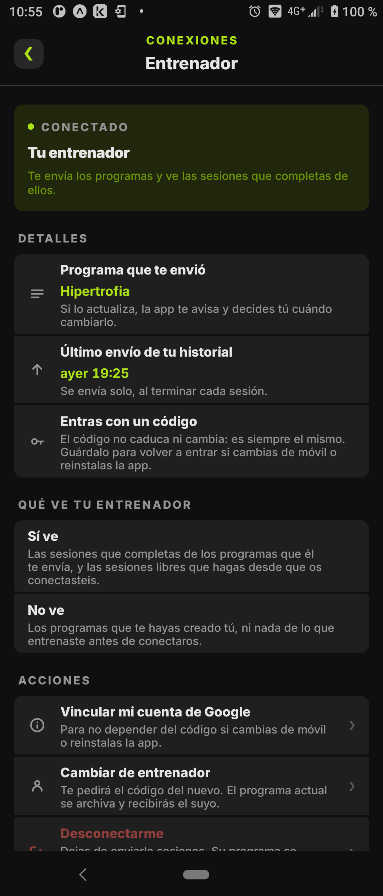
006-entrenador-vincular.png006b-vincular-google-previo.png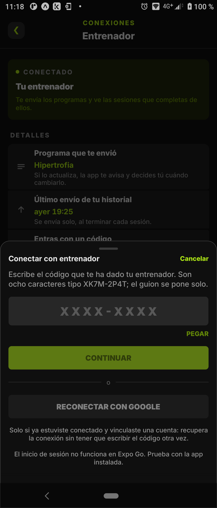
006c-cambiar-entrenador.png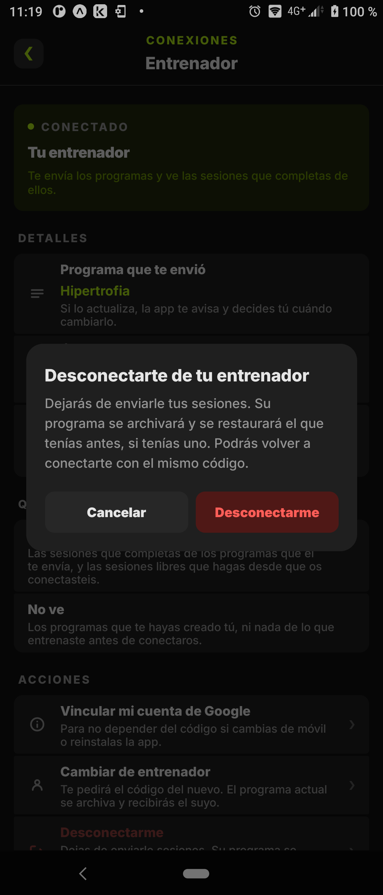
006d-desconectar.pngDejarás de enviarle tus sesiones. Su programa se archivará y se restaurará el que tenías antes, si tenías uno. Podrás volver a conectarte con el mismo código. trainer.disconnectBody | |
Ocho caracteres tipo XK7M-2P4T que te da tu entrenador. Es siempre el mismo, así que guárdalo: lo necesitarás si reinstalas la app. trainer.how3Sub | |
El código no caduca ni cambia: es siempre el mismo. Guárdalo para volver a entrar si cambias de móvil o reinstalas la app. trainer.rowAccessCodeSub | |
Las sesiones que completas de los programas que él te envía, y las sesiones libres que hagas desde que os conectasteis. trainer.sharedBody | |
Solo si ya estuviste conectado y vinculaste una cuenta: recupera la conexión sin tener que escribir el código otra vez. trainer.socialCtaHint | |
Dejas de enviarle sesiones. Su programa se archiva y se restaura el que tenías antes. Para volver, el mismo código. trainer.disconnectSub | |
Vincula una cuenta para recuperar la conexión con tu entrenador en otro móvil sin volver a pedirle el código. trainer.linkLead | |
Si entrenas por tu cuenta no necesitas esto. Conéctate solo si un entrenador te prepara los programas. trainer.offSub | |
Tu última sesión aún no le ha llegado. Se reintenta al abrir la app, o puedes reintentarlo ahora. trainer.pendingSub | |
Los programas que te hayas creado tú, ni nada de lo que entrenaste antes de conectaros. trainer.notSharedBody | |
Te pedirá el código del nuevo. El programa actual se archiva y recibirás el suyo. trainer.changeSub | |
Puedes recuperar la conexión en otro móvil sin pedirle nada a tu entrenador. trainer.rowAccessGoogleSub | |
El inicio de sesión no funciona en Expo Go. Prueba con la app instalada. trainer.expoGoNote | |
Al terminar cada sesión se le envía el registro para que vea cómo vas. trainer.how2Sub | |
Para no depender del código si cambias de móvil o reinstalas la app. trainer.linkGoogleSub | |
Tu conexión con el entrenador y tu historial se quedan como están. trainer.linkImplies1 | |
Te llega a la app y entrenas con él igual que con cualquier otro. trainer.how1Sub | |
Te envía los programas y ve las sesiones que completas de ellos. trainer.connectedSub | |
Si lo actualiza, la app te avisa y decides tú cuándo cambiarlo. trainer.rowProgramSub | |
No se devolvió la identidad de la cuenta. Inténtalo otra vez. trainer.errNoIdToken | |
En otro móvil basta con entrar con la misma cuenta. trainer.linkImplies2 | |
Falló el {{when}}. Se reintentará automáticamente. trainer.rowLastUploadFailed | |
No se pudo vincular la cuenta. Inténtalo otra vez. trainer.linkErrBody | |
Intenta mandarle tu historial ahora mismo. trainer.retrySub | |
Todavía no te ha enviado ningún programa. trainer.rowProgramNoneSub | |
Ya no tendrás que guardar ningún código. trainer.linkImplies3 | |
Se envía solo, al terminar cada sesión. trainer.rowLastUploadSub | |
Desconectarte de tu entrenador trainer.disconnectTitle | |
Entras con tu cuenta de Google trainer.rowAccessGoogle | |
Entras con tu cuenta de Apple trainer.rowAccessApple | |
Último envío de tu historial trainer.rowLastUpload | |
Vincular mi cuenta de Google trainer.linkGoogleLabel | |
Tus sesiones le llegan solas trainer.how2Title | |
RECONECTAR CON MI CUENTA trainer.socialCta | |
Historial sincronizado header.toastSynced | |
No se pudo sincronizar header.toastSyncFailed | |
Él escribe tu programa trainer.how1Title | |
CONECTAR CON UN CÓDIGO trainer.connectCta | |
Programa que te envió trainer.rowProgram | |
Cambiar de entrenador trainer.changeLabel | |
RECONECTAR CON GOOGLE trainer.googleCta | |
Entras con un código trainer.rowAccessCode | |
QUÉ VE TU ENTRENADOR trainer.sectionPrivacy | |
Hace falta su código trainer.how3Title | |
CONTINUAR CON GOOGLE trainer.linkCta | |
Reintentar el envío trainer.retryLabel | |
Vincular una cuenta trainer.linkAccountLabel | |
No se pudo vincular trainer.linkErrTitle | |
No estás conectado trainer.offTitle | |
Cuenta vinculada trainer.linkToast | |
Vincular cuenta trainer.linkTitle | |
SIN ENTRENADOR trainer.tagOff | |
Tu entrenador trainer.unnamedTrainer | |
Desconectarme trainer.disconnectConfirm | |
Desconectarme trainer.disconnectLabel | |
CÓMO FUNCIONA trainer.sectionHow | |
FALTA ENVIAR trainer.tagPending | |
Aún ninguno trainer.never | |
CONEXIONES header.sectionConnections | |
Entrenador trainer.title | |
QUÉ CAMBIA trainer.linkWhatHappens | |
Enviando… trainer.retryingLabel | |
CONECTADO trainer.tagConnected | |
Cancelar common.cancel | |
DETALLES trainer.sectionDetails | |
ACCIONES trainer.sectionActions | |
Ninguno trainer.rowProgramNone | |
Sí ve trainer.sharedTitle | |
No ve trainer.notSharedTitle | |
Ayer dayCard.yesterday | |
Hoy dayCard.today |
Todo lo que tienes ahora en la app (programas, historial y ajustes) se reemplaza por lo que había en la copia del {{when}}. Esto no se puede deshacer. drive.restoreBody | |
Programas, historial, ejercicios propios, ajustes, y también tus clientes y plantillas de sesión, en la carpeta «Forma Backups» de tu Google Drive. drive.how1Sub | |
La sesión con Google ha caducado, así que no se ha podido consultar tu Drive. Vuelve a conectar en la pestaña Ajustes: tus copias siguen ahí. drive.backupsNeedReconnect | |
Se dejarán de guardar copias nuevas. Las copias que ya están en tu Drive no se borran y puedes volver a conectarte cuando quieras. drive.disconnectBody | |
Se borrarán de tu Google Drive y no se podrán recuperar. La app seguirá conectada y guardará copias nuevas. drive.deleteAllBody | |
La app solo puede ver los archivos que ella misma crea; el resto de tu Drive le es invisible. drive.how2Sub | |
Google ha caducado el permiso. Vuelve a conectar la cuenta para seguir guardando copias. drive.reconnectSub | |
La conexión con Google no funciona en Expo Go. Prueba con la app instalada (build EAS). drive.expoGoNote | |
Cada copia es un archivo con su fecha. Al pasar de 30, las más viejas se borran solas. drive.how3Sub | |
Tus datos viven solo en este móvil. Si lo pierdes o reinstalas la app, se van con él. drive.offSub | |
Recomendado: la copia va siempre al día y no necesita permisos en segundo plano. drive.freqSessionSub | |
Se dejan de guardar copias nuevas. Las que ya están en Drive no se borran. drive.disconnectSub | |
Se le añade la fecha automáticamente, así distingues cada copia en Drive. drive.nameHint | |
No se ha podido consultar tu Drive. Desliza hacia abajo para reintentar. drive.backupsLoadFailed | |
Conecta tu cuenta de Google en la pestaña Ajustes para ver tus copias. drive.backupsNeedConnect | |
Vuelve a conectar tu cuenta de Google para seguir guardando copias. drive.errExpiredBody | |
En segundo plano, aunque no entrenes esa semana. drive.freqWeeklySub | |
Se borran de tu Drive y no se pueden recuperar. drive.deleteAllSub | |
Toca una copia para restaurarla en este móvil. drive.backupsHint | |
En segundo plano, aunque no entrenes ese día. drive.freqDailySub | |
En segundo plano, aunque no entrenes ese mes. drive.freqMonthlySub | |
Todavía no hay ninguna copia en tu Drive. drive.backupsEmpty | |
Todavía no se ha guardado ninguna copia. drive.activeSubNever | |
Inténtalo otra vez en un momento. drive.errBackupBody | |
No esperes a la próxima sesión. drive.backupNowSub | |
No se pudo guardar la copia drive.errBackupTitle | |
Es tu cuenta, no la nuestra drive.how2Title | |
Se guardará como {{name}} drive.namePreview | |
Se guardan las 30 últimas drive.how3Title | |
Borrar todas las copias drive.deleteAllTitle | |
Guardar una copia ahora drive.backupNow | |
Borrar todas las copias drive.deleteAll | |
Guarda todo en tu Drive drive.how1Title | |
Al terminar cada sesión drive.freqSession | |
Conectando con Google… drive.loadingConnect | |
Google Drive conectado drive.toastConnected | |
Sin copia de seguridad drive.offTitle | |
Última copia: {{when}} drive.activeSub | |
Descargando la copia… drive.loadingRestore | |
No se pudieron borrar drive.errDeleteTitle | |
Desconectar la cuenta drive.disconnectTitle | |
Desconectar la cuenta drive.disconnect | |
Restaurar esta copia drive.restoreTitle | |
No se pudo restaurar drive.errRestoreTitle | |
No se pudo conectar drive.errConnectTitle | |
Cuenta desconectada drive.toastDisconnected | |
CONECTAR CON GOOGLE drive.connectCta | |
Una vez a la semana drive.freqWeekly | |
HAY QUE RECONECTAR drive.tagReconnect | |
NOMBRE DEL ARCHIVO drive.sectionName | |
VOLVER A CONECTAR drive.reconnectCta | |
Cargando copias… drive.loadingBackups | |
Guardando copia… drive.loadingBackup | |
Permiso caducado drive.errExpiredTitle | |
Copia restaurada drive.toastRestored | |
CUÁNDO SE GUARDA drive.sectionFrequency | |
Copias borradas drive.toastDeleted | |
Copia guardada drive.toastSaved | |
Copia en Drive drive.title | |
Una vez al día drive.freqDaily | |
Una vez al mes drive.freqMonthly | |
COPIA ACTIVA drive.tagActive | |
forma-backup drive.namePlaceholder | |
Borrar todo drive.deleteAllConfirm | |
Desconectar drive.disconnectConfirm | |
CONEXIONES header.sectionConnections | |
SIN COPIAS drive.tagOff | |
Restaurar drive.restoreConfirm | |
Borrando… drive.loadingDelete | |
Cancelar common.cancel | |
ACCIONES drive.sectionActions | |
QUÉ HACE drive.sectionHow | |
Ajustes drive.tabSettings | |
Copias drive.tabBackups | |
Ayer dayCard.yesterday | |
Hoy dayCard.today |
Si pierdes el móvil y no tienes el código, no se pueden recuperar ni la cuenta ni tu compra en otro móvil. En esta misma cuenta de la tienda, «Restaurar compra anterior» sigue funcionando. sync.revealWarnPurchase | |
Se cerrará la cuenta actual. Tus clientes se quedan guardados en este móvil, pero dejan de sincronizar hasta que vuelvas a entrar. sync.switchBody | |
Escribe tu código de entrenador para recuperar el acceso a tus clientes. Son doce caracteres; los guiones se ponen solos. sync.recoveryLead | |
Si pierdes el móvil y no tienes el código, la cuenta y la sincronización con tus clientes no se pueden recuperar. sync.revealWarn | |
Tus clientes quedan asociados a tu cuenta. No hay ningún código que guardar: entras con Google y ya está. sync.modeGoogleDesc | |
Este es tu código. Cópialo y guárdalo donde no lo pierdas: es la única forma de recuperar la cuenta. sync.revealLead | |
Igual que con Google, pero con tu Apple ID. Puedes ocultar tu correo y aun así recuperar la cuenta. sync.modeAppleDesc | |
Nada sale de este móvil. Compartes programas e historial exportando e importando archivos a mano. sync.modeOfflineDesc | |
Vincúlala a una cuenta para recuperarla en cualquier móvil, aunque cambies de Android a iPhone. sync.purchaseLead | |
La app crea un código de 12 caracteres. Todo funciona igual, pero el código es tu única llave. sync.modeCodeDesc | |
Úsalo si la app dejó de reconocerte: vuelve a entrar con el código que ya tienes guardado. sync.reauthHint | |
Ya tienes un código. Si creas otro, tus clientes actuales dejan de sincronizar con él. sync.warnCodeExists | |
Con tu código personal. Guárdalo: es lo que te devuelve la cuenta si cambias de móvil. sync.statusSub | |
Tus clientes actuales se migran solos a tu cuenta y dejas de depender del código. sync.switchUpgradeBody | |
Elige cómo quieres que la app guarde tus clientes. Puedes cambiarlo más adelante. sync.selectLead | |
Es el nombre que tus clientes ven en los programas que les envías. sync.nameHint | |
No se devolvió la identidad de la cuenta. Inténtalo otra vez. sync.errNoIdToken | |
Guárdalo tú: sin ese código no se puede recuperar la cuenta. sync.modeCodeWarn | |
Tus clientes actuales se pasan solos a tu cuenta. sync.warnUpgrade | |
Comprueba tu código e inténtalo otra vez. sync.errReconnectBody | |
Solo en la app instalada, no en Expo Go. sync.onlyInstalled | |
¿Ya tienes un código? Recuperar cuenta → sync.recoveryLink | |
Volver a autenticarse con otro código → sync.reauthLink | |
Cambiar el modo de sincronización → sync.changeModeLink | |
Entrar con otra cuenta de Google → sync.reauthGoogleLink | |
Inténtalo otra vez en un momento. sync.errGoogleBody | |
Inténtalo otra vez en un momento. sync.errAccountBody | |
Tus clientes están sincronizados sync.statusTitle | |
No se pudo volver a autenticar sync.errReconnectTitle | |
No se pudo entrar con Google sync.errGoogleTitle | |
No se pudo entrar con Apple sync.errAppleTitle | |
No se pudo crear la cuenta sync.errAccountTitle | |
Con tu cuenta de Google sync.modeGoogleTitle | |
Con tu cuenta de Apple sync.modeAppleTitle | |
Con un código personal sync.modeCodeTitle | |
CONTINUAR CON GOOGLE sync.ctaGoogle | |
¿Pasar a tu cuenta? sync.switchUpgradeTitle | |
Gestión de clientes sync.titleFirstTime | |
VOLVER A AUTENTICAR sync.reauthCta | |
Tu código personal sync.revealTitle | |
¿Cambiar el modo? sync.switchTitle | |
Pasar a la cuenta sync.switchUpgradeConfirm | |
YA LO HE GUARDADO sync.revealCta | |
SEGUIR SIN CUENTA sync.ctaOffline | |
Toca para copiar sync.copyHint | |
Ej. Lucas García sync.namePlaceholder | |
Guarda tu compra sync.purchaseTitle | |
Recuperar cuenta sync.recoveryTitle | |
CREAR MI CÓDIGO sync.ctaCode | |
Sincronización sync.title | |
SINCRONIZANDO sync.statusTag | |
YA CONECTADO sync.ctaConnected | |
Sin cuenta sync.modeOfflineTitle | |
✓ Copiado sync.copied | |
TU NOMBRE sync.nameLabel | |
TU CÓDIGO sync.yourCodeLabel | |
RECUPERAR sync.recoveryCta | |
Cancelar common.cancel | |
Ahora no sync.purchaseLater | |
Cambiar sync.switchConfirm | |
Aceptar common.accept | |
Atrás trainer.codeBack |
Al crear un programa nuevo te desconectarás de tu entrenador y el programa actual será reemplazado. header.newProgramWarnBody | |
Borra tu cuenta y lo que haya en el servidor. No se puede deshacer. header.deleteAccountSub | |
⚠️ Última sesión no enviada al entrenador · Toca para reintentar header.pendingBanner | |
Una sola tarjeta en Inicio, con una pestaña por sesión header.homeTabsHint | |
Muestra las pestañas de Clientes y Plantillas header.proTabsHint | |
KG, reps y RPE se ajustan sobre una regla header.scrubRulerHint | |
Solo el programa activo y sus sesiones header.exportProgramHistorySub | |
Entrenador · aparece en tus programas header.identityRole | |
Recibe los programas de tu entrenador header.trainerSubOff | |
Todo: programas, historial y ajustes header.exportBackupSub | |
Copia automática de tus datos header.driveSubOff | |
Exportar programa + historial header.exportProgramHistory | |
Sincronización con clientes header.clientSyncRow | |
Requiere volver a conectar header.driveSubReconnect | |
Con código de recuperación header.syncSubCode | |
Solo en este dispositivo header.syncSubOffline | |
🗂 Programas archivados header.archivedPrograms | |
↑ Programa y historial header.programAndHistory | |
Pestañas de entrenador header.proTabsLabel | |
Última copia: {{when}} header.driveSubLast | |
Historial sincronizado header.toastSynced | |
No se pudo sincronizar header.toastSyncFailed | |
sincroniza por código header.trainerSubCode | |
reconexión con Google header.trainerSubGoogle | |
Copia en Google Drive header.driveRow | |
Sesiones en pestañas header.homeTabsLabel | |
Programas archivados header.archivedProgramsItem | |
Crear nuevo programa header.newProgramWarnTitle | |
Con cuenta de Google header.syncSubGoogle | |
Con cuenta de Apple header.syncSubApple | |
Programa restaurado header.toastRestored | |
Sin copias todavía header.driveSubNever | |
Eliminar mi cuenta header.deleteAccountRow | |
↑ Backup completo header.fullBackup | |
Regla al deslizar header.scrubRulerLabel | |
backup · programa header.exportRowValue | |
＋ Nuevo programa header.newProgram | |
Importar archivo header.importFile | |
Datos importados header.toastImported | |
Añade tu nombre header.namePlaceholder | |
Exportar backup header.exportBackup | |
Cambiar a FREE header.switchToFree | |
Nuevo programa header.newProgramItem | |
Sin configurar header.syncSubNone | |
Sincronizando… header.pendingBannerSyncing | |
Cambiar a PRO header.switchToPro | |
Peso corporal header.bodyWeight | |
DESARROLLADOR header.sectionDeveloper | |
Documentación header.docsRow | |
PREFERENCIAS header.sectionPreferences | |
Exportando… header.exporting | |
CONEXIONES header.sectionConnections | |
Entrenador header.trainerRow | |
Reconectar header.statusReconnect | |
Configurar header.statusSetUp | |
Developer header.developer | |
PROGRAMAS header.sectionPrograms | |
Conectado header.statusConnected | |
Exportar header.exportSection | |
Importar header.importSection | |
Unidades header.units | |
Conectar header.statusConnect | |
Exportar header.exportRow | |
Exportar header.exportSheetTitle | |
Activar header.statusActivate | |
Idioma header.language | |
CUENTA header.sectionAccount | |
Activa header.statusActive | |
Plan: header.plan | |
DATOS header.sectionData | |
Tema header.theme | |
Plan header.planRow |
Sin Pro, el plan gratis llega a 3 clientes y solo 1 con app. Los que no elijas quedan fuera de plan: puedes ver su historial, pero no apuntarles ni enviarles nada. No se borra nada, pero lo que elijas ya no se puede cambiar. freePlan.chooseLead | |
Te ha quedado un hueco en el plan gratis. Puedes ocuparlo con un cliente fuera de plan; los que ya elegiste no cambian. freePlan.chooseMoreLead | |
El plan gratis llega a {{max}} clientes, {{maxApp}} con app. Elige con quién sigues. freePlan.bannerSub | |
{{price}} al año. Se renueva sola; cancélala cuando quieras desde {{store}}. paywall.plan.annualLegal | |
Tú programas, ellos entrenan. Todo sincronizado sin salir de la app. paywall.features.connected.desc | |
Cliente fuera de plan: el plan gratis no lo incluye. paywall.frozenError | |
{{n}}/{{max}} clientes · {{app}}/{{maxApp}} con app freePlan.chooseCount | |
Crea programas y sesiones listos para asignar. paywall.features.templates.desc | |
Puedes recuperar a un cliente sin hacerte Pro. freePlan.roomSub | |
Pago único de {{price}}, sin suscripción. paywall.plan.lifetimeLegal | |
Todos tus clientes *sincronizados* paywall.features.connected.title | |
Inténtalo otra vez en un momento. drive.errBackupBody | |
Compra procesada, sincronizando… paywall.processing | |
Conecta con todos tus *clientes* paywall.headline | |
UNA APP PARA ENTRENARLOS A TODOS paywall.tagline | |
{{count}} clientes fuera de plan freePlan.bannerTitle_other | |
{{count}} cliente fuera de plan freePlan.bannerTitle_one | |
No se pudo completar la compra paywall.errTitle | |
Suscribirme · {{price}}/año paywall.plan.annualCta | |
*Sin límite* de plantillas paywall.features.templates.title | |
El plan gratis llega a 3. paywall.features.clients.desc | |
*Sin límite* de clientes paywall.features.clients.title | |
Te queda un hueco libre freePlan.roomTitle | |
Forma Pro próximamente paywall.comingSoon | |
Comprar por {{price}} paywall.plan.lifetimeCta | |
Prefiero hacerme Pro freePlan.goPro | |
{{price}} al mes paywall.plan.annualMonthly | |
Sin renovaciones paywall.plan.lifetimeSub | |
Restaurar compra paywall.restore | |
Con quién sigues freePlan.chooseTitle | |
Seguir con estos freePlan.chooseCta | |
Términos de uso paywall.terms | |
Forma de pago paywall.payTitle | |
Fuera de plan freePlan.frozenLabel | |
Fuera de plan freePlan.outOfPlan | |
Fuera de plan freePlan.frozenSection | |
Le apuntas tú freePlan.withoutApp | |
Para siempre paywall.plan.lifetime | |
RECOMENDADO paywall.plan.recommended | |
Privacidad paywall.privacy | |
pago único paywall.plan.lifetimePer | |
elegido freePlan.alreadyChosen | |
Con app freePlan.withApp | |
Cerrar common.close | |
al año paywall.plan.annualPer | |
Elegir freePlan.bannerBtn | |
Anual paywall.plan.annual |
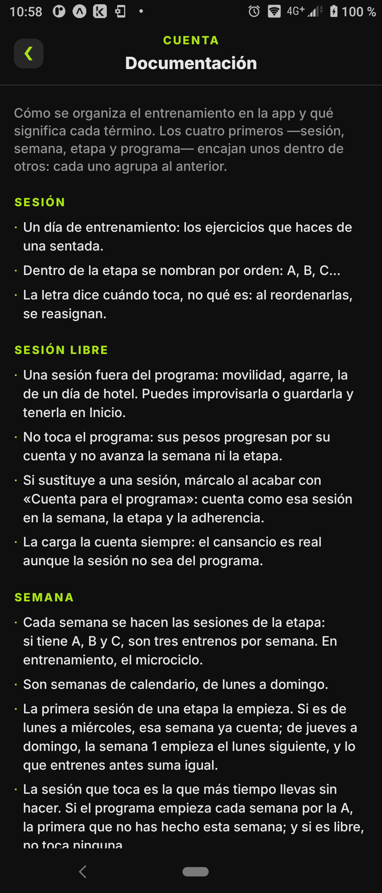
012a-documentacion.png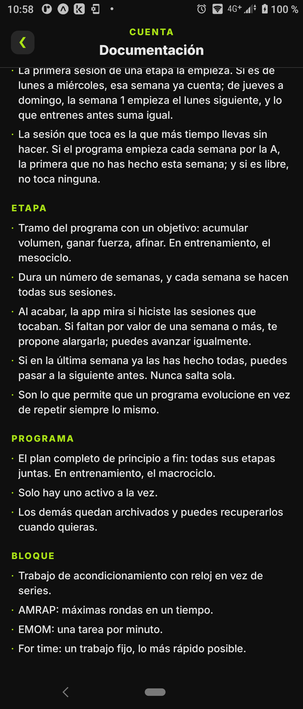
012b-documentacion.png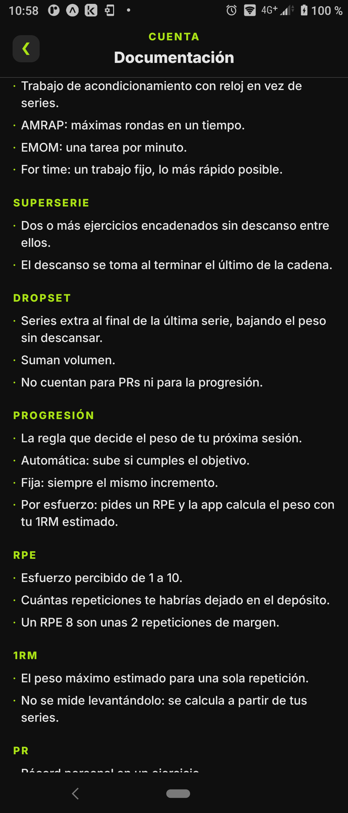
012c-documentacion.png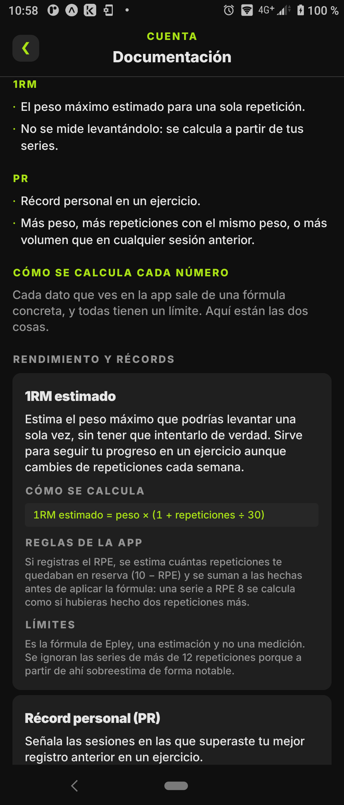
012d-documentacion.png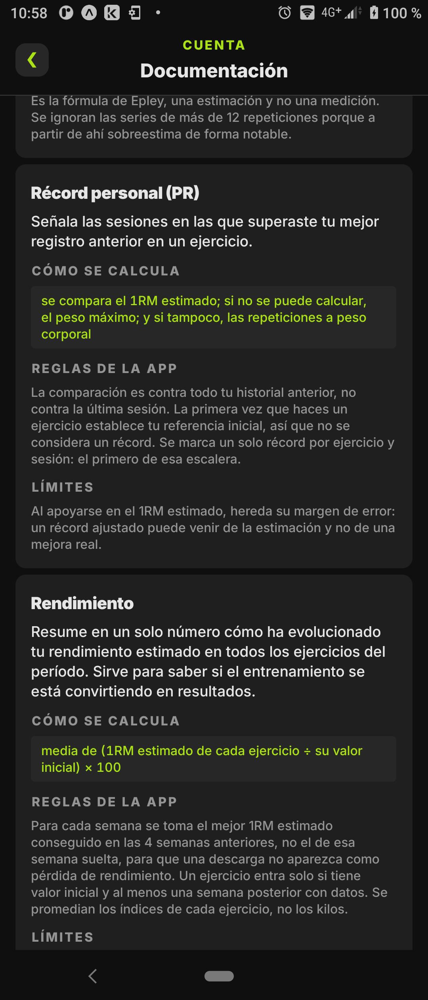
012e-documentacion.png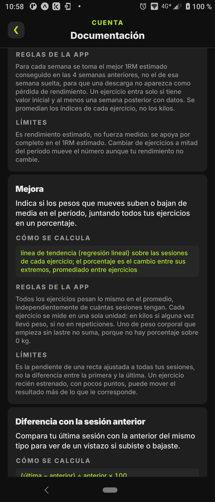
012f-documentacion.png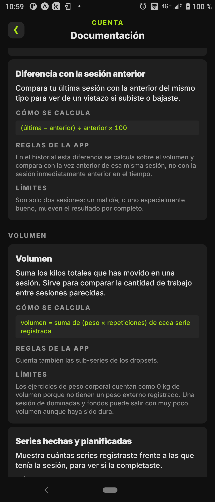
012g-documentacion.png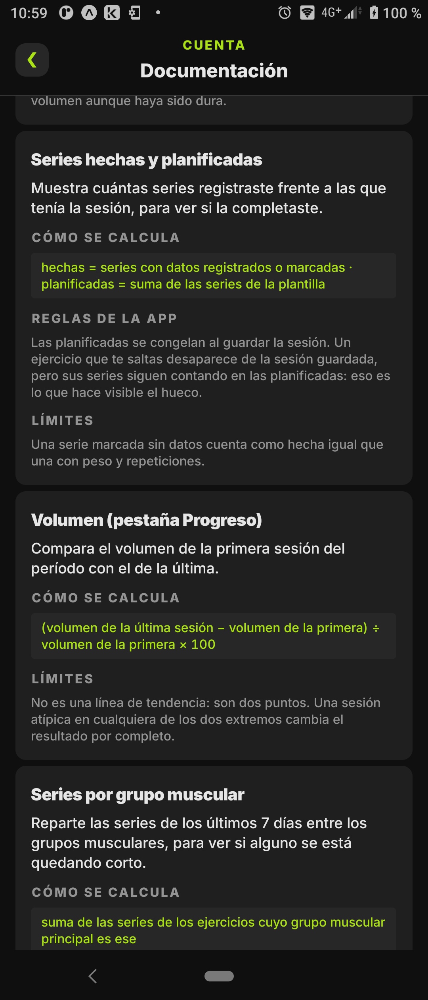
012h-documentacion.png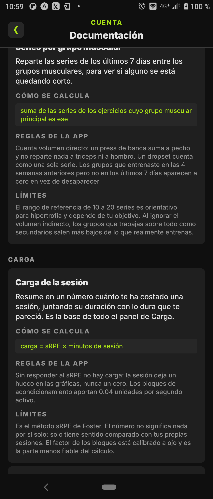
012i-documentacion.png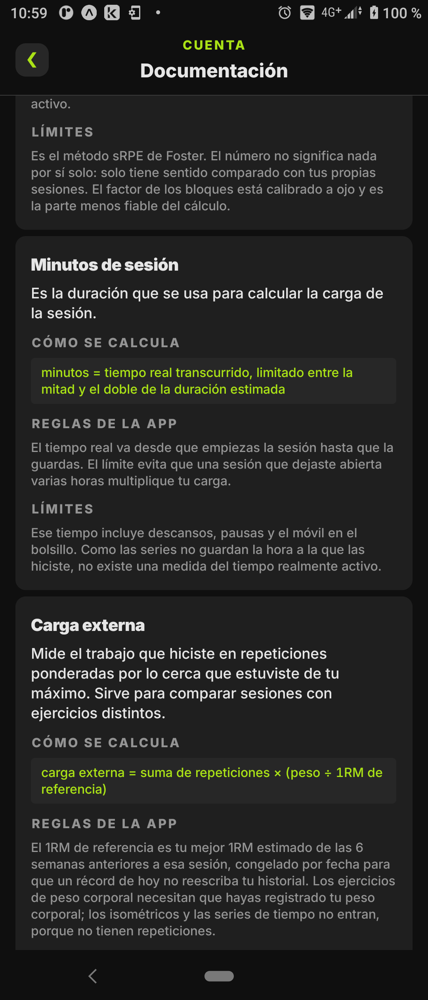
012j-documentacion.png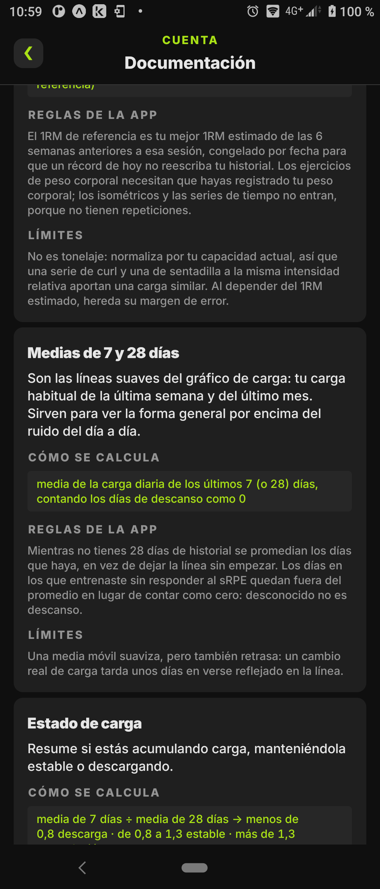
012k-documentacion.png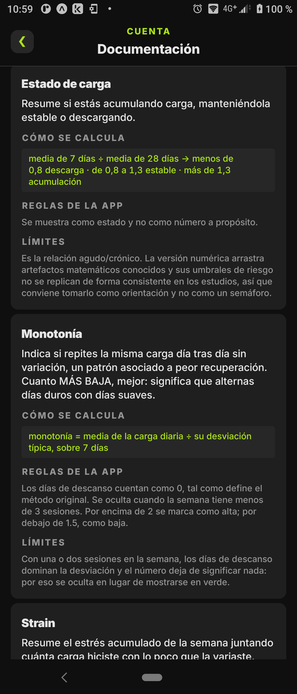
012l-documentacion.png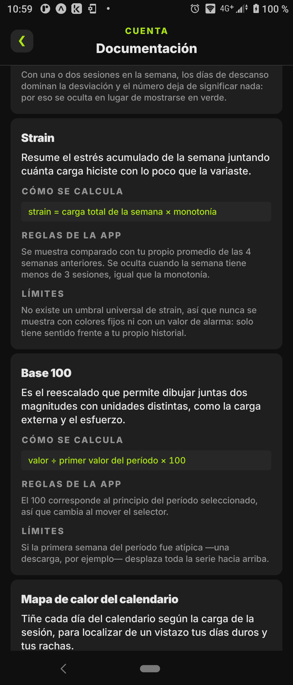
012m-documentacion.png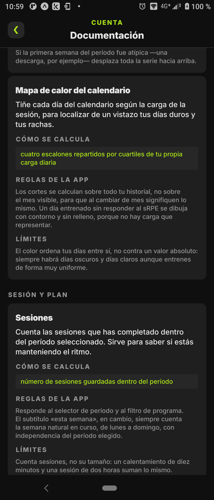
012n-documentacion.png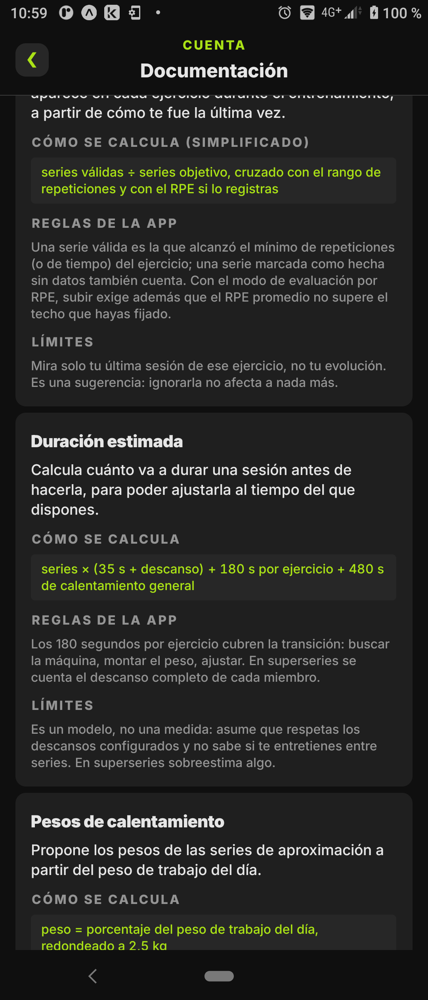
012o-documentacion.png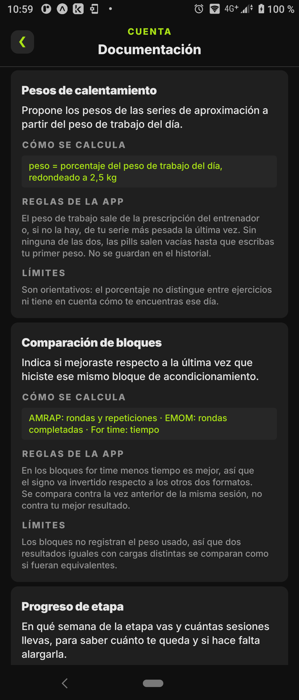
012p-documentacion.png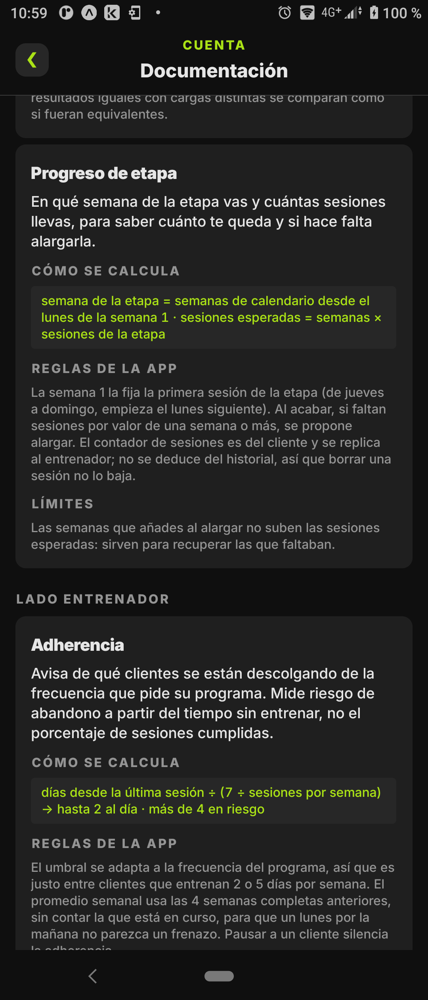
012q-documentacion.png012r-documentacion.png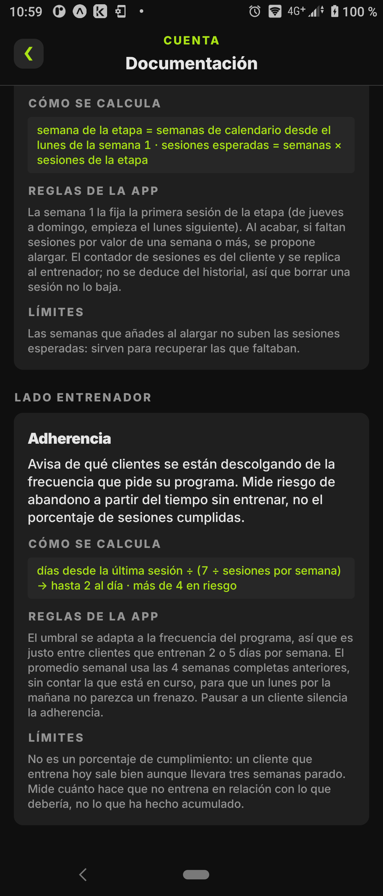
012v-documentacion.png012w-documentacion.png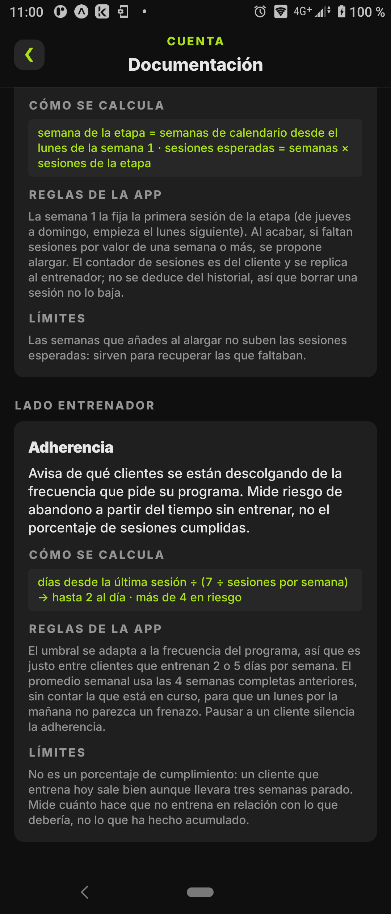
012y-documentacion.pngPara cada semana se toma el mejor 1RM estimado conseguido en las 4 semanas anteriores, no el de esa semana suelta, para que una descarga no aparezca como pérdida de rendimiento. Un ejercicio entra solo si tiene valor inicial y al menos una semana posterior con datos. Se promedian los índices de cada ejercicio, no los kilos. metrics.performanceIndex.rules | |
El 1RM de referencia es tu mejor 1RM estimado de las 6 semanas anteriores a esa sesión, congelado por fecha para que un récord de hoy no reescriba tu historial. Los ejercicios de peso corporal necesitan que hayas registrado tu peso corporal; los isométricos y las series de tiempo no entran, porque no tienen repeticiones. metrics.externalLoad.rules | |
Es una ventana móvil de 7 días, no la semana natural: un lunes por la mañana la semana natural está casi vacía y el dato no serviría. El subtítulo es tu media de las 4 semanas anteriores, para saber si esta semana es normal para ti. Es además el recuento que decide si la monotonía y el strain se muestran o se ocultan. metrics.weekSessions.rules | |
La semana 1 la fija la primera sesión de la etapa (de jueves a domingo, empieza el lunes siguiente). Al acabar, si faltan sesiones por valor de una semana o más, se propone alargar. El contador de sesiones es del cliente y se replica al entrenador; no se deduce del historial, así que borrar una sesión no lo baja. metrics.stageProgress.rules | |
El umbral se adapta a la frecuencia del programa, así que es justo entre clientes que entrenan 2 o 5 días por semana. El promedio semanal usa las 4 semanas completas anteriores, sin contar la que está en curso, para que un lunes por la mañana no parezca un frenazo. Pausar a un cliente silencia la adherencia. metrics.adherence.rules | |
Todos los ejercicios pesan lo mismo en el promedio, independientemente de cuántas sesiones tengan. Cada ejercicio se mide en una sola unidad: en kilos si alguna vez llevó peso, si no en repeticiones. Uno de peso corporal que empieza sin lastre no suma, porque no hay porcentaje sobre 0 kg. metrics.loadTrend.rules | |
La comparación es contra todo tu historial anterior, no contra la última sesión. La primera vez que haces un ejercicio establece tu referencia inicial, así que no se considera un récord. Se marca un solo récord por ejercicio y sesión: el primero de esa escalera. metrics.pr.rules | |
Cuenta volumen directo: un press de banca suma a pecho y no reparte nada a tríceps ni a hombro. Un dropset cuenta como una sola serie. Los grupos que entrenaste en las 4 semanas anteriores pero no en los últimos 7 días aparecen a cero en vez de desaparecer. metrics.muscleGroupSets.rules | |
Una serie válida es la que alcanzó el mínimo de repeticiones (o de tiempo) del ejercicio; una serie marcada como hecha sin datos también cuenta. Con el modo de evaluación por RPE, subir exige además que el RPE promedio no supere el techo que hayas fijado. metrics.progressionChip.rules | |
Cuando la línea de 7 días va por encima de la de 28 estás acumulando más carga de la habitual; cuando cae por debajo, estás descargando. Que se crucen a menudo es señal de alternancia sana. Lo que conviene vigilar es una separación grande y sostenida. chartDocs.loadOverTime.read | |
Mientras no tienes 28 días de historial se promedian los días que haya, en vez de dejar la línea sin empezar. Los días en los que entrenaste sin responder al sRPE quedan fuera del promedio en lugar de contar como cero: desconocido no es descanso. metrics.movingAverage.rules | |
El rango de referencia de {{min}} a {{max}} series es orientativo para hipertrofia y depende de tu objetivo. Al ignorar el volumen indirecto, los grupos que trabajas sobre todo como secundarios salen más bajos de lo que realmente entrenas. metrics.muscleGroupSets.caveat | |
Los cortes se calculan sobre todo tu historial, no sobre el mes visible, para que al cambiar de mes signifiquen lo mismo. Un día entrenado sin responder al sRPE se dibuja con contorno y sin relleno, porque no hay carga que representar. metrics.loadHeatmap.rules | |
Es la salida del sistema: la carga es lo que metes y esto es lo que sale. Subir aquí con la carga estable es la señal más clara de que el entrenamiento está funcionando. Que baje mientras la carga sube suele avisar de un estancamiento. chartDocs.performance.read | |
Es la relación agudo/crónico. La versión numérica arrastra artefactos matemáticos conocidos y sus umbrales de riesgo no se replican de forma consistente en los estudios, así que conviene tomarlo como orientación y no como un semáforo. metrics.loadState.caveat | |
Lo que importa es si se separan, no dónde están. Más trabajo al mismo coste significa que te estás adaptando. El mismo trabajo costando más es fatiga acumulada. Las dos subiendo es un bloque duro, y las dos bajando, una descarga. chartDocs.effortVsLoad.read | |
El peso de trabajo sale de la prescripción del entrenador o, si no la hay, de tu serie más pesada la última vez. Sin ninguna de las dos, las pills salen vacías hasta que escribas tu primer peso. No se guardan en el historial. metrics.warmupWeight.rules | |
Los días de descanso cuentan como 0, tal como define el método original. Se oculta cuando la semana tiene menos de {{minSessions}} sesiones. Por encima de {{high}} se marca como alta; por debajo de {{moderate}}, como baja. metrics.monotony.rules | |
Si registras el RPE, se estima cuántas repeticiones te quedaban en reserva (10 − RPE) y se suman a las hechas antes de aplicar la fórmula: una serie a RPE 8 se calcula como si hubieras hecho dos repeticiones más. metrics.e1rm.rules | |
No es tonelaje: normaliza por tu capacidad actual, así que una serie de curl y una de sentadilla a la misma intensidad relativa aportan una carga similar. Al depender del 1RM estimado, hereda su margen de error. metrics.externalLoad.caveat | |
Es la pendiente de una recta ajustada a todas tus sesiones, no la diferencia entre la primera y la última. Un ejercicio recién estrenado, con pocos puntos, puede mover el resultado más de lo que le corresponde. metrics.loadTrend.caveat | |
Es el método sRPE de Foster. El número no significa nada por sí solo: solo tiene sentido comparado con tus propias sesiones. El factor de los bloques está calibrado a ojo y es la parte menos fiable del cálculo. metrics.sessionLoad.caveat | |
No es un porcentaje de cumplimiento: un cliente que entrena hoy sale bien aunque llevara tres semanas parado. Mide cuánto hace que no entrena en relación con lo que debería, no lo que ha hecho acumulado. metrics.adherence.caveat | |
Las planificadas se congelan al guardar la sesión. Un ejercicio que te saltas desaparece de la sesión guardada, pero sus series siguen contando en las planificadas: eso es lo que hace visible el hueco. metrics.setsDonePlanned.rules | |
Responde al selector de período y al filtro de programa. El subtítulo «esta semana», en cambio, siempre cuenta la semana natural en curso, de lunes a domingo, con independencia del período elegido. metrics.sessionCount.rules | |
En los bloques for time menos tiempo es mejor, así que el signo va invertido respecto a los otros dos formatos. Se compara contra la vez anterior de la misma sesión, no contra tu mejor resultado. metrics.blockDelta.rules | |
Los ejercicios de peso corporal cuentan como 0 kg de volumen porque no tienen un peso externo registrado. Una sesión de dominadas y fondos puede salir con muy poco volumen aunque haya sido dura. metrics.volume.caveat | |
Cuenta sesiones, no su tamaño: un calentamiento de diez minutos y una sesión de dos horas suman lo mismo. No confundir con la tarjeta «Sesiones» de Progreso, que cuenta el período seleccionado. metrics.weekSessions.caveat | |
La primera sesión de una etapa la empieza. Si es de lunes a miércoles, esa semana ya cuenta; de jueves a domingo, la semana 1 empieza el lunes siguiente, y lo que entrenes antes suma igual. docs.sections.2.points.2 | |
Cómo se organiza el entrenamiento en la app y qué significa cada término. Los cuatro primeros —sesión, semana, etapa y programa— encajan unos dentro de otros: cada uno agrupa al anterior. docs.intro | |
Cada barra es la carga de un día. Las dos líneas son la media de los últimos 7 días (lima) y de los últimos 28 (azul), que enseñan la forma general por debajo del ruido del día a día. chartDocs.loadOverTime.what | |
Estima el peso máximo que podrías levantar una sola vez, sin tener que intentarlo de verdad. Sirve para seguir tu progreso en un ejercicio aunque cambies de repeticiones cada semana. metrics.e1rm.what | |
Dos líneas semanales: el trabajo que haces (carga externa) y lo que te cuesta (esfuerzo). Van en unidades distintas, así que las dos se reescalan a base 100 para poder compararlas. chartDocs.effortVsLoad.what | |
Resume en un solo número cómo ha evolucionado tu rendimiento estimado en todos los ejercicios del período. Sirve para saber si el entrenamiento se está convirtiendo en resultados. metrics.performanceIndex.what | |
Avisa de qué clientes se están descolgando de la frecuencia que pide su programa. Mide riesgo de abandono a partir del tiempo sin entrenar, no el porcentaje de sesiones cumplidas. metrics.adherence.what | |
Sin responder al sRPE no hay carga: la sesión deja un hueco en las gráficas, nunca un cero. Los bloques de acondicionamiento aportan {{blockFactor}} unidades por segundo activo. metrics.sessionLoad.rules | |
Busca huecos, no perfección. Un grupo a cero o muy por debajo del rango varias semanas seguidas es lo accionable. Pasarse por arriba no es malo en sí mismo si te recuperas bien. chartDocs.muscleGroups.read | |
Es rendimiento estimado, no fuerza medida: se apoya por completo en el 1RM estimado. Cambiar de ejercicios a mitad del período mueve el número aunque tu rendimiento no cambie. metrics.performanceIndex.caveat | |
Indica si repites la misma carga día tras día sin variación, un patrón asociado a peor recuperación. Cuanto MÁS BAJA, mejor: significa que alternas días duros con días suaves. metrics.monotony.what | |
La sesión que toca es la que más tiempo llevas sin hacer. Si el programa empieza cada semana por la A, la primera que no has hecho esta semana; y si es libre, no toca ninguna. docs.sections.2.points.3 | |
Cuántas veces has entrenado en los últimos 7 días. Está junto a la carga porque es lo que le da sentido: 2.400 de carga no significa lo mismo saliendo de 3 sesiones que de 5. metrics.weekSessions.what | |
Ese tiempo incluye descansos, pausas y el móvil en el bolsillo. Como las series no guardan la hora a la que las hiciste, no existe una medida del tiempo realmente activo. metrics.sessionMinutes.caveat | |
Son las líneas suaves del gráfico de carga: tu carga habitual de la última semana y del último mes. Sirven para ver la forma general por encima del ruido del día a día. metrics.movingAverage.what | |
Es la fórmula de Epley, una estimación y no una medición. Se ignoran las series de más de {{maxReps}} repeticiones porque a partir de ahí sobreestima de forma notable. metrics.e1rm.caveat | |
Con una o dos sesiones en la semana, los días de descanso dominan la desviación y el número deja de significar nada: por eso se oculta en lugar de mostrarse en verde. metrics.monotony.caveat | |
En el historial esta diferencia se calcula sobre el volumen y compara con la vez anterior de esa misma sesión, no con la sesión inmediatamente anterior en el tiempo. metrics.lastSessionDelta.rules | |
Se muestra comparado con tu propio promedio de las 4 semanas anteriores. Se oculta cuando la semana tiene menos de {{minSessions}} sesiones, igual que la monotonía. metrics.strain.rules | |
No existe un umbral universal de strain, así que nunca se muestra con colores fijos ni con un valor de alarma: solo tiene sentido frente a tu propio historial. metrics.strain.caveat | |
Los 180 segundos por ejercicio cubren la transición: buscar la máquina, montar el peso, ajustar. En superseries se cuenta el descanso completo de cada miembro. metrics.estimatedDuration.rules | |
El estrés acumulado de cada semana, una barra por semana. Las semanas con menos de 3 sesiones van en contorno: se entrenó, pero no hay dato fiable que dibujar. chartDocs.strainWeekly.what | |
Manda la forma, no la altura concreta. Tres o cuatro semanas subiendo y luego una caída es un mesociclo sano. Subir sin caer nunca es lo que hay que vigilar. chartDocs.strainWeekly.read | |
El tiempo real va desde que empiezas la sesión hasta que la guardas. El límite evita que una sesión que dejaste abierta varias horas multiplique tu carga. metrics.sessionMinutes.rules | |
línea de tendencia (regresión lineal) sobre las sesiones de cada ejercicio; el porcentaje es el cambio entre sus extremos, promediado entre ejercicios metrics.loadTrend.formula | |
Mide el trabajo que hiciste en repeticiones ponderadas por lo cerca que estuviste de tu máximo. Sirve para comparar sesiones con ejercicios distintos. metrics.externalLoad.what | |
Es un modelo, no una medida: asume que respetas los descansos configurados y no sabe si te entretienes entre series. En superseries sobreestima algo. metrics.estimatedDuration.caveat | |
Al acabar, la app mira si hiciste las sesiones que tocaban. Si faltan por valor de una semana o más, te propone alargarla; puedes avanzar igualmente. docs.sections.3.points.2 | |
El color ordena tus días entre sí, no contra un valor absoluto: siempre habrá días oscuros y días claros aunque entrenes de forma muy uniforme. metrics.loadHeatmap.caveat | |
Resume en un número cuánto te ha costado una sesión, juntando su duración con lo dura que te pareció. Es la base de todo el panel de Carga. metrics.sessionLoad.what | |
Es la sugerencia de subir, mantener o bajar que aparece en cada ejercicio durante el entrenamiento, a partir de cómo te fue la última vez. metrics.progressionChip.what | |
Si sustituye a una sesión, márcalo al acabar con «Cuenta para el programa»: cuenta como esa sesión en la semana, la etapa y la adherencia. docs.sections.1.points.2 | |
No es una línea de tendencia: son dos puntos. Una sesión atípica en cualquiera de los dos extremos cambia el resultado por completo. metrics.volumeTrend.caveat | |
Los bloques no registran el peso usado, así que dos resultados iguales con cargas distintas se comparan como si fueran equivalentes. metrics.blockDelta.caveat | |
Al apoyarse en el 1RM estimado, hereda su margen de error: un récord ajustado puede venir de la estimación y no de una mejora real. metrics.pr.caveat | |
Cada semana se hacen las sesiones de la etapa: si tiene A, B y C, son tres entrenos por semana. En entrenamiento, el microciclo. docs.sections.2.points.0 | |
semana de la etapa = semanas de calendario desde el lunes de la semana 1 · sesiones esperadas = semanas × sesiones de la etapa metrics.stageProgress.formula | |
Una sesión fuera del programa: movilidad, agarre, la de un día de hotel. Puedes improvisarla o guardarla y tenerla en Inicio. docs.sections.1.points.0 | |
Suma los kilos totales que has movido en una sesión. Sirve para comparar la cantidad de trabajo entre sesiones parecidas. metrics.volume.what | |
Es el reescalado que permite dibujar juntas dos magnitudes con unidades distintas, como la carga externa y el esfuerzo. metrics.indexed100.what | |
Cuenta las sesiones que has completado dentro del período seleccionado. Sirve para saber si estás manteniendo el ritmo. metrics.sessionCount.what | |
Una media móvil suaviza, pero también retrasa: un cambio real de carga tarda unos días en verse reflejado en la línea. metrics.movingAverage.caveat | |
Indica si los pesos que mueves suben o bajan de media en el período, juntando todos tus ejercicios en un porcentaje. metrics.loadTrend.what | |
se compara el 1RM estimado; si no se puede calcular, el peso máximo; y si tampoco, las repeticiones a peso corporal metrics.pr.formula | |
Tiñe cada día del calendario según la carga de la sesión, para localizar de un vistazo tus días duros y tus rachas. metrics.loadHeatmap.what | |
Las series de los últimos 7 días repartidas por grupo muscular, con dos marcas que señalan el rango de referencia. chartDocs.muscleGroups.what | |
Reparte las series de los últimos 7 días entre los grupos musculares, para ver si alguno se está quedando corto. metrics.muscleGroupSets.what | |
Mira solo tu última sesión de ese ejercicio, no tu evolución. Es una sugerencia: ignorarla no afecta a nada más. metrics.progressionChip.caveat | |
En qué semana de la etapa vas y cuántas sesiones llevas, para saber cuánto te queda y si hace falta alargarla. metrics.stageProgress.what | |
Cada dato que ves en la app sale de una fórmula concreta, y todas tienen un límite. Aquí están las dos cosas. docs.metricsIntro | |
Si la primera semana del período fue atípica —una descarga, por ejemplo— desplaza toda la serie hacia arriba. metrics.indexed100.caveat | |
Son orientativos: el porcentaje no distingue entre ejercicios ni tiene en cuenta cómo te encuentras ese día. metrics.warmupWeight.caveat | |
Tramo del programa con un objetivo: acumular volumen, ganar fuerza, afinar. En entrenamiento, el mesociclo. docs.sections.3.points.0 | |
media de 7 días ÷ media de 28 días → menos de 0,8 descarga · de 0,8 a 1,3 estable · más de 1,3 acumulación metrics.loadState.formula | |
Las semanas que añades al alargar no suben las sesiones esperadas: sirven para recuperar las que faltaban. metrics.stageProgress.caveat | |
Cuenta sesiones, no su tamaño: un calentamiento de diez minutos y una sesión de dos horas suman lo mismo. metrics.sessionCount.caveat | |
Calcula cuánto va a durar una sesión antes de hacerla, para poder ajustarla al tiempo del que dispones. metrics.estimatedDuration.what | |
Compara tu última sesión con la anterior del mismo tipo para ver de un vistazo si subiste o bajaste. metrics.lastSessionDelta.what | |
hechas = series con datos registrados o marcadas · planificadas = suma de las series de la plantilla metrics.setsDonePlanned.formula | |
series válidas ÷ series objetivo, cruzado con el rango de repeticiones y con el RPE si lo registras metrics.progressionChip.formula | |
Si en la última semana ya las has hecho todas, puedes pasar a la siguiente antes. Nunca salta sola. docs.sections.3.points.3 | |
Resume el estrés acumulado de la semana juntando cuánta carga hiciste con lo poco que la variaste. metrics.strain.what | |
Muestra cuántas series registraste frente a las que tenía la sesión, para ver si la completaste. metrics.setsDonePlanned.what | |
Son solo dos sesiones: un mal día, o uno especialmente bueno, mueven el resultado por completo. metrics.lastSessionDelta.caveat | |
Indica si mejoraste respecto a la última vez que hiciste ese mismo bloque de acondicionamiento. metrics.blockDelta.what | |
minutos = tiempo real transcurrido, limitado entre la mitad y el doble de la duración estimada metrics.sessionMinutes.formula | |
El 100 corresponde al principio del período seleccionado, así que cambia al mover el selector. metrics.indexed100.rules | |
El plan completo de principio a fin: todas sus etapas juntas. En entrenamiento, el macrociclo. docs.sections.4.points.0 | |
días desde la última sesión ÷ (7 ÷ sesiones por semana) → hasta 2 al día · más de 4 en riesgo metrics.adherence.formula | |
Más peso, más repeticiones con el mismo peso, o más volumen que en cualquier sesión anterior. docs.sections.11.points.1 | |
Cómo evoluciona tu 1RM estimado medio a lo largo del período, con 100 en tu punto de partida. chartDocs.performance.what | |
media de la carga diaria de los últimos 7 (o 28) días, contando los días de descanso como 0 metrics.movingAverage.formula | |
No toca el programa: sus pesos progresan por su cuenta y no avanza la semana ni la etapa. docs.sections.1.points.1 | |
La carga la cuenta siempre: el cansancio es real aunque la sesión no sea del programa. docs.sections.1.points.3 | |
Propone los pesos de las series de aproximación a partir del peso de trabajo del día. metrics.warmupWeight.what | |
Señala las sesiones en las que superaste tu mejor registro anterior en un ejercicio. metrics.pr.what | |
Una serie marcada sin datos cuenta como hecha igual que una con peso y repeticiones. metrics.setsDonePlanned.caveat | |
(volumen de la última sesión − volumen de la primera) ÷ volumen de la primera × 100 metrics.volumeTrend.formula | |
series × (35 s + descanso) + 180 s por ejercicio + 480 s de calentamiento general metrics.estimatedDuration.formula | |
Son lo que permite que un programa evolucione en vez de repetir siempre lo mismo. docs.sections.3.points.4 | |
AMRAP: rondas y repeticiones · EMOM: rondas completadas · For time: tiempo metrics.blockDelta.formula | |
suma de las series de los ejercicios cuyo grupo muscular principal es ese metrics.muscleGroupSets.formula | |
monotonía = media de la carga diaria ÷ su desviación típica, sobre 7 días metrics.monotony.formula | |
Compara el volumen de la primera sesión del período con el de la última. metrics.volumeTrend.what | |
Series extra al final de la última serie, bajando el peso sin descansar. docs.sections.7.points.0 | |
Por esfuerzo: pides un RPE y la app calcula el peso con tu 1RM estimado. docs.sections.8.points.3 | |
Resume si estás acumulando carga, manteniéndola estable o descargando. metrics.loadState.what | |
Dura un número de semanas, y cada semana se hacen todas sus sesiones. docs.sections.3.points.1 | |
La letra dice cuándo toca, no qué es: al reordenarlas, se reasignan. docs.sections.0.points.2 | |
cuatro escalones repartidos por cuartiles de tu propia carga diaria metrics.loadHeatmap.formula | |
media de (1RM estimado de cada ejercicio ÷ su valor inicial) × 100 metrics.performanceIndex.formula | |
peso = porcentaje del peso de trabajo del día, redondeado a 2,5 kg metrics.warmupWeight.formula | |
carga externa = suma de repeticiones × (peso ÷ 1RM de referencia) metrics.externalLoad.formula | |
Un día de entrenamiento: los ejercicios que haces de una sentada. docs.sections.0.points.0 | |
Los demás quedan archivados y puedes recuperarlos cuando quieras. docs.sections.4.points.2 | |
volumen = suma de (peso × repeticiones) de cada serie registrada metrics.volume.formula | |
Es la duración que se usa para calcular la carga de la sesión. metrics.sessionMinutes.what | |
No se mide levantándolo: se calcula a partir de tus series. docs.sections.10.points.1 | |
Dos o más ejercicios encadenados sin descanso entre ellos. docs.sections.6.points.0 | |
Trabajo de acondicionamiento con reloj en vez de series. docs.sections.5.points.0 | |
El descanso se toma al terminar el último de la cadena. docs.sections.6.points.1 | |
Cuántas repeticiones te habrías dejado en el depósito. docs.sections.9.points.1 | |
Se muestra como estado y no como número a propósito. metrics.loadState.rules | |
número de sesiones guardadas en los últimos 7 días metrics.weekSessions.formula | |
Dentro de la etapa se nombran por orden: A, B, C… docs.sections.0.points.1 | |
For time: un trabajo fijo, lo más rápido posible. docs.sections.5.points.3 | |
La regla que decide el peso de tu próxima sesión. docs.sections.8.points.0 | |
El peso máximo estimado para una sola repetición. docs.sections.10.points.0 | |
número de sesiones guardadas dentro del período metrics.sessionCount.formula | |
Cuenta también las sub-series de los dropsets. metrics.volume.rules | |
Son semanas de calendario, de lunes a domingo. docs.sections.2.points.1 | |
1RM estimado = peso × (1 + repeticiones ÷ 30) metrics.e1rm.formula | |
strain = carga total de la semana × monotonía metrics.strain.formula | |
Un RPE 8 son unas 2 repeticiones de margen. docs.sections.9.points.2 | |
No cuentan para PRs ni para la progresión. docs.sections.7.points.2 | |
Automática: sube si cumples el objetivo. docs.sections.8.points.1 | |
valor ÷ primer valor del período × 100 metrics.indexed100.formula | |
(última − anterior) ÷ anterior × 100 metrics.lastSessionDelta.formula | |
AMRAP: máximas rondas en un tiempo. docs.sections.5.points.1 | |
Fija: siempre el mismo incremento. docs.sections.8.points.2 | |
Diferencia con la sesión anterior metrics.lastSessionDelta.name | |
carga = sRPE × minutos de sesión metrics.sessionLoad.formula | |
Récord personal en un ejercicio. docs.sections.11.points.0 | |
Cómo se calcula (simplificado) docs.metricFormulaApprox | |
Solo hay uno activo a la vez. docs.sections.4.points.1 | |
Esfuerzo percibido de 1 a 10. docs.sections.9.points.0 | |
Series hechas y planificadas metrics.setsDonePlanned.name | |
Mapa de calor del calendario metrics.loadHeatmap.name | |
Cómo se calcula cada número docs.metricsTitle | |
Recomendación de progresión metrics.progressionChip.name | |
EMOM: una tarea por minuto. docs.sections.5.points.2 | |
Volumen (pestaña Progreso) metrics.volumeTrend.name | |
Series por grupo muscular metrics.muscleGroupSets.name | |
Sesiones (últimos 7 días) metrics.weekSessions.name | |
Pesos de calentamiento metrics.warmupWeight.name | |
Comparación de bloques metrics.blockDelta.name | |
Rendimiento y récords docs.metricGroups.performance | |
Medias de 7 y 28 días metrics.movingAverage.name | |
Datos que lo componen docs.chartParts | |
Evolución de la carga chartDocs.loadOverTime.name | |
Récord personal (PR) metrics.pr.name | |
Carga de la sesión metrics.sessionLoad.name | |
Minutos de sesión metrics.sessionMinutes.name | |
Duración estimada metrics.estimatedDuration.name | |
Progreso de etapa metrics.stageProgress.name | |
Esfuerzo vs carga chartDocs.effortVsLoad.name | |
Strain por semana chartDocs.strainWeekly.name | |
Reglas de la app docs.metricRules | |
Series por grupo chartDocs.muscleGroups.name | |
Lado entrenador docs.metricGroups.trainer | |
Cómo se calcula docs.metricFormula | |
Estado de carga metrics.loadState.name | |
Suman volumen. docs.sections.7.points.1 | |
Documentación docs.title | |
Sesión y plan docs.metricGroups.session | |
Carga externa metrics.externalLoad.name | |
1RM estimado metrics.e1rm.name | |
Sesión libre docs.sections.1.title | |
Rendimiento metrics.performanceIndex.name | |
Cómo leerla docs.chartRead | |
progression docs.sections.8.id | |
Rendimiento chartDocs.performance.name | |
Adherencia metrics.adherence.name | |
Superserie docs.sections.6.title | |
Progresión docs.sections.8.title | |
Monotonía metrics.monotony.name | |
Base 100 metrics.indexed100.name | |
Sesiones metrics.sessionCount.name | |
Programa docs.sections.4.title | |
superset docs.sections.6.id | |
Volumen docs.metricGroups.volume | |
Límites docs.metricCaveat | |
Volumen metrics.volume.name | |
session docs.sections.0.id | |
program docs.sections.4.id | |
dropset docs.sections.7.id | |
Dropset docs.sections.7.title | |
CUENTA header.sectionAccount | |
Mejora metrics.loadTrend.name | |
Strain metrics.strain.name | |
Sesión docs.sections.0.title | |
Semana docs.sections.2.title | |
Bloque docs.sections.5.title | |
Carga docs.metricGroups.load | |
stage docs.sections.3.id | |
Etapa docs.sections.3.title | |
block docs.sections.5.id | |
onerm docs.sections.10.id | |
free docs.sections.1.id | |
week docs.sections.2.id | |
rpe docs.sections.9.id | |
RPE docs.sections.9.title | |
1RM docs.sections.10.title | |
pr docs.sections.11.id | |
PR docs.sections.11.title |
No tienes ninguna cuenta que borrar: esta app está en modo sin conexión y nada tuyo sale de este móvil. Si quieres empezar de cero, desinstala la app. deleteAccount.noAccount | |
Si tienes Pro no lo pierdes: la compra va con tu cuenta de Apple o Google Play, no con esta. Se recupera con "Restaurar compras". deleteAccount.staysPro | |
Tu historial, tus programas y tus ejercicios de este móvil se quedan como están. La app sigue funcionando sin cuenta. deleteAccount.staysLocal | |
Tus clientes dejan de estar sincronizados: pierden el programa que les enviaste y su código deja de funcionar. deleteAccount.implTrainer | |
Se borra tu cuenta del servidor y todo lo que esté guardado en ella. Esto no se puede deshacer. deleteAccount.lead | |
No hay forma de recuperarlo. Ni con tu código, ni entrando otra vez con Google o Apple. deleteAccount.implIrreversible | |
Dejas de estar conectado con tu entrenador y se borra el historial que él tenía tuyo. deleteAccount.implClient | |
Esta acción no se puede deshacer. deleteAccount.confirmBody | |
Inténtalo otra vez en un momento. deleteAccount.errBody | |
No se pudo eliminar la cuenta deleteAccount.errTitle | |
Eliminar tu cuenta deleteAccount.confirmTitle | |
ELIMINAR MI CUENTA deleteAccount.cta | |
Cuenta eliminada deleteAccount.toastDone | |
Eliminar cuenta deleteAccount.title | |
QUÉ NO SE BORRA deleteAccount.whatStays | |
QUÉ SE BORRA deleteAccount.whatHappens | |
Cancelar common.cancel | |
Eliminar deleteAccount.confirmCta |
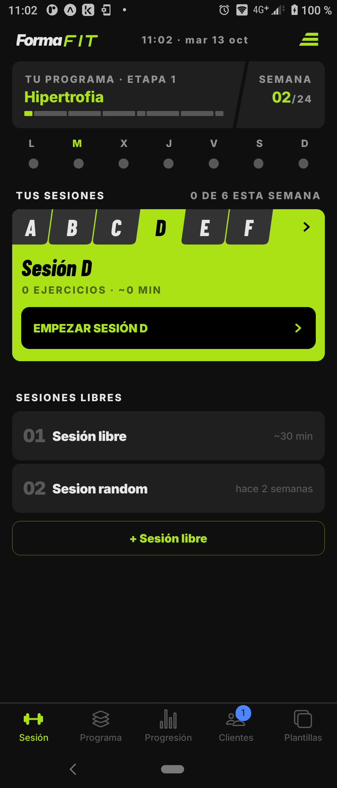
020-inicio-programa.png021-inicio-desplazado.png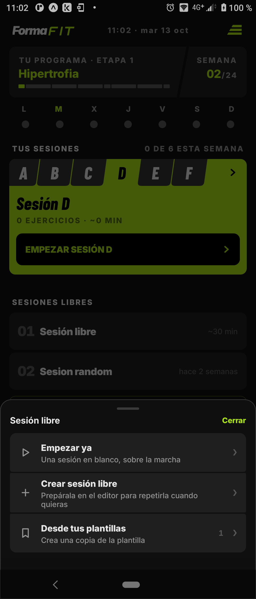
022-hoja-sesion-libre.png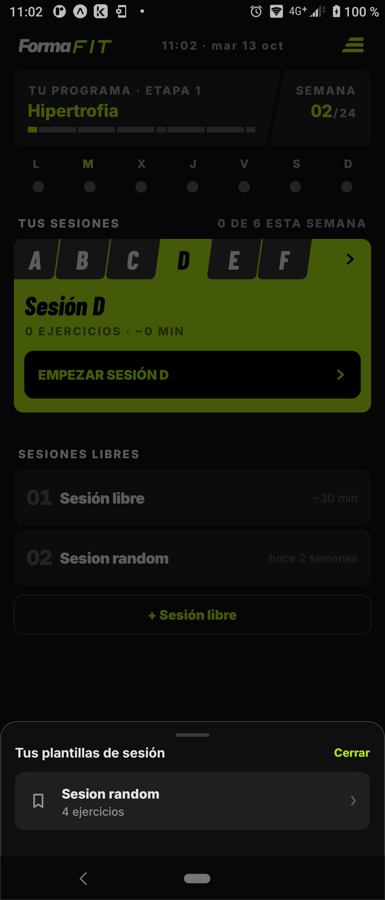
023-hoja-desde-plantillas.png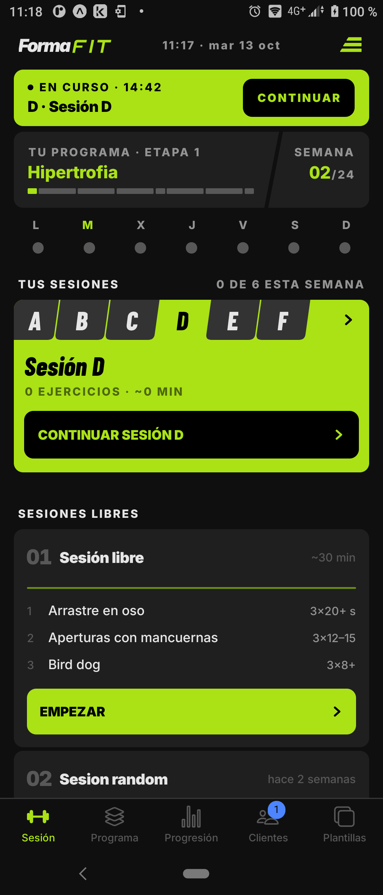
024-banner-sesion-activa.pngSesión puntual — queda guardada en tu historial ligada al programa activo, pero no modifica el progreso ni el contador de semanas. freeSession.infoText | |
Ya has hecho las {{expected}} sesiones de {{current}}. Puedes pasar a {{next}} ya o terminar la semana. home.stageEarlyText | |
Has terminado {{current}}. La siguiente, {{next}}, está bloqueada — tu entrenador tiene que abrirla. home.stageLockedText | |
Al crear un programa nuevo te desconectarás de tu entrenador y el programa actual será reemplazado. header.newProgramWarnBody | |
Es la sesión que estás haciendo: termínala o descártala antes de borrarla. freeSession.deleteActive | |
Se borra «{{name}}». Las veces que la hiciste siguen en el historial. freeSession.deleteConfirm | |
Prepárala en el editor para repetirla cuando quieras freeSession.createDesc | |
Mientras tanto puedes seguir entrenando esta etapa. home.stageLockedHint | |
Has terminado {{current}}. ¿Empezar {{next}}? home.stageAdvanceText | |
{{count}} ejercicios · ~{{minutes}} min home.sessionMeta | |
Añadir {{count}} ejercicios a la sesión freeSession.addExercises_other | |
Añadir {{count}} ejercicio a la sesión freeSession.addExercises_one | |
Una sesión en blanco, sobre la marcha freeSession.startNowDesc | |
Semana {{current}} de {{total}} home.weekProgress | |
Guardada en tus sesiones libres freeSession.saved | |
Crea una copia de la plantilla freeSession.fromTemplatesDesc | |
Guardar como sesión libre freeSession.saveAsFree | |
Tus plantillas de sesión freeSession.templatesTitle | |
No hay programa activo. home.noActiveProgram | |
Continuar sesión libre freeSession.btnContinue | |
Eliminar sesión libre freeSession.delete | |
Desde tus plantillas freeSession.fromTemplates | |
Crear nuevo programa header.newProgramWarnTitle | |
{{count}} ejercicios freeSession.templateExercises_other | |
Añadidos a la sesión freeSession.exercisesAdded | |
Añadida a tu Inicio freeSession.addedToHome | |
Compartir la sesión sessionText.share | |
{{count}} ejercicio freeSession.templateExercises_one | |
AVANZAR A {{name}} home.advanceTo | |
¡Etapa completada! home.stageCompleted | |
Crear sesión libre freeSession.create | |
Ocultar ejercicios home.collapse | |
Nombre (opcional) freeSession.namePlaceholder | |
{{count}} bloques freeSession.templateBlocks_other | |
Sesión {{label}} workout.sessionLabel | |
~{{minutes}} min home.rowMinutes | |
Abre tu programa home.openProgram | |
＋ NUEVO PROGRAMA home.newProgram | |
{{count}} bloque freeSession.templateBlocks_one | |
la etapa actual home.currentStageDefault | |
Etapa bloqueada home.stageLockedTitle | |
Etapa terminada home.stageEndedTitle | |
Sesiones libres freeSession.sectionTitle | |
Semana {{week}} programCard.stageWeekOpen | |
Sesión guardada freeSession.toastSaved | |
UNA SEMANA MÁS home.oneMoreWeek | |
última {{rel}} home.heroMetaLast | |
+ Sesión libre freeSession.btn | |
Ver ejercicios home.expand | |
Sesión libre freeSession.templateUnnamed | |
Tus sesiones home.sessions | |
Sesión libre freeSession.badge | |
Sesión libre freeSession.startTitle | |
Sesión libre freeSession.historyLabel | |
Primera vez home.firstTime | |
Etapa {{n}} home.stageDefault | |
Sin empezar programCard.stageNotStarted | |
Tu programa home.yourProgram | |
de {{name}} home.fromTrainer | |
entrenaste home.dayTrained | |
Completada home.sessionDone | |
Empezar ya freeSession.startNow | |
ENTENDIDO home.understood | |
Pendiente home.sessionPending | |
CONTINUAR home.btnContinue | |
Continuar common.continue | |
AHORA NO home.notNow | |
En curso home.running | |
Adaptada home.adapted | |
For time blocks.formats.for_time | |
Cancelar common.cancel | |
Semana home.week | |
Editar home.edit | |
AMRAP blocks.formats.amrap | |
EMOM blocks.formats.emom | |
Hoy dayCard.today |
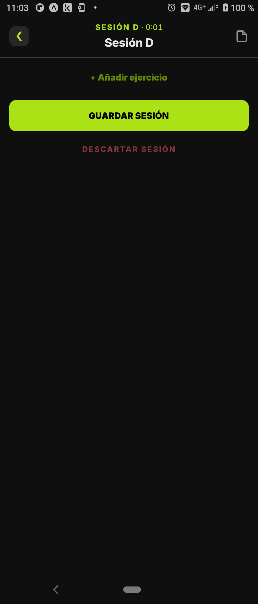
030a-workout-vacio.png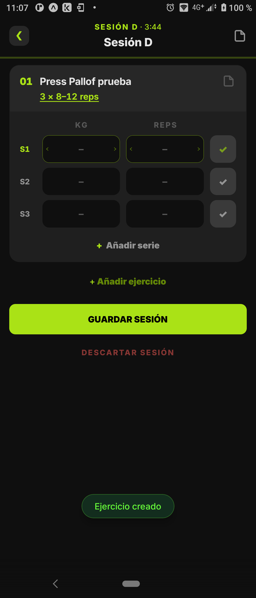
031a-workout-ejercicio.png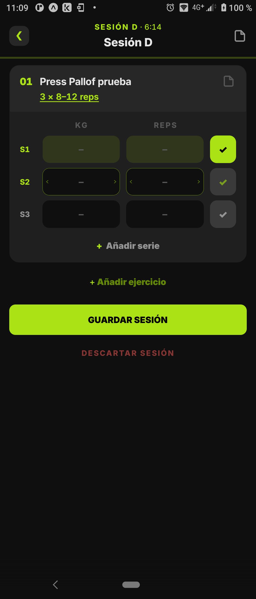
031b-serie-marcada-descanso.png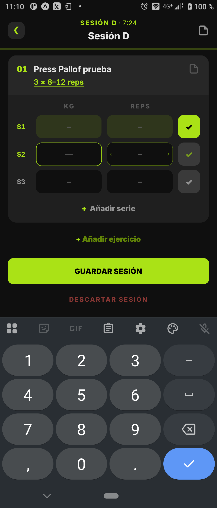
032-regla-deslizar.png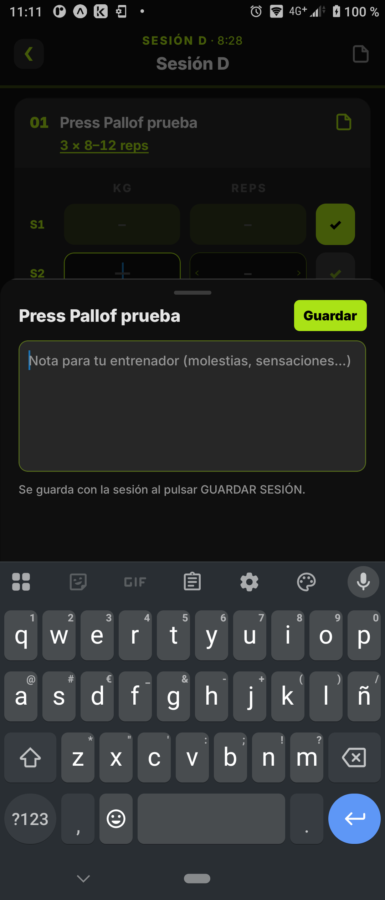
033-notas-ejercicio.pngSesión puntual — queda guardada en tu historial ligada al programa activo, pero no modifica el progreso ni el contador de semanas. freeSession.infoText | |
Elige un peso con el que hagas {{what}} en todas las series. Desde la próxima sesión, la progresión decide. workout.progSheet.firstWeight | |
Haz las reps que puedas en cada serie ({{what}}). Desde la próxima sesión, la progresión decide. workout.progSheet.firstBodyweight | |
Aguanta lo que puedas en cada serie ({{what}}). Desde la próxima sesión, la progresión decide. workout.progSheet.firstTime | |
Elige un peso con el que hagas {{what}}. Desde la próxima sesión, la progresión lo calcula. workout.progSheet.firstEffort | |
Anota cómo fue el entreno, sensaciones, ajustes para la próxima vez... workout.notesPlaceholder | |
El programa no cambia. Queda apuntado en el registro de hoy. variants.todayHint | |
Los pesos se calculan al escribir tu primer peso de trabajo workout.warmup.noReference | |
1RM estimado: {{kg}} (media de {{count}} sesiones) workout.progSheet.e1rmMany | |
Se guarda con la sesión al pulsar GUARDAR SESIÓN. workout.notesSavedWith | |
Nota para tu entrenador (molestias, sensaciones…) workout.clientNotePlaceholder | |
{{label}} · {{count}} series hasta {{weight}} workout.warmup.collapsedSummary | |
Bloque de acondicionamiento editor.addBlockOption | |
{{name}} — descansaste bien restTimer.notifDoneBodyNamed | |
¡A por la siguiente serie! restTimer.notifDoneTitle | |
Objetivo de tu entrenador workout.coachTarget | |
Temporizador de descanso restTimer.notifChannelRest | |
Hoy · solo esta sesión variants.todayTitle | |
Aguanta lo que puedas workout.progression.firstTime | |
Drops · sin descanso workout.dropsetLabel | |
1RM estimado: {{kg}} workout.progSheet.e1rmOne | |
{{count}}s restantes restTimer.remaining | |
¡Descanso terminado! restTimer.notifDoneBody | |
Haz las que puedas workout.progression.firstBodyweight | |
Sin sesión activa workout.noActiveSession | |
Nombre (opcional) freeSession.namePlaceholder | |
Descanso {{sec}}s workout.warmup.restLabel | |
Sesión {{label}} workout.sessionLabel | |
Añadir ejercicio workout.addExercise | |
Descartar sesión workout.discardSession | |
Sin temporizador workout.warmup.noTimer | |
NOTAS DE SESIÓN workout.sessionNotes | |
Fin de descanso restTimer.notifChannelDone | |
GUARDAR SESIÓN workout.saveSession | |
· C×{{count}} workout.warmup.metaSuffix | |
Busca tu peso workout.progression.firstWeight | |
Calentamiento workout.warmup.blockLabel | |
Apunta el RPE workout.e1rmNoRpe | |
La última vez workout.progSheet.lastTime | |
Peso objetivo workout.progression.effortTo | |
Sesión libre freeSession.badge | |
Sesión libre freeSession.templateUnnamed | |
Añadir serie workout.addSetBtn | |
Descansando… restTimer.notifResting | |
esta sesión workout.thisSession | |
Añadir drop workout.addDropBtn | |
Primera vez workout.progSheet.first | |
Menos ayuda workout.progression.assistLessTo | |
Descarga a workout.progression.deloadTo | |
¡Adelante! restTimer.go | |
Ejercicio editor.addExerciseOption | |
Principal common.keyExercise | |
Más ayuda workout.progression.assistMoreTo | |
Saltar › restTimer.skip | |
Variante variants.title | |
Estrecho variants.options.width.narrow | |
Mantener workout.progression.hold | |
Descarga workout.progression.deload | |
Subir a workout.progression.upTo | |
Bajar a workout.progression.downTo | |
Guardar common.save | |
Añadir editor.addSheetTitle | |
Series workout.setsSectionLabel | |
Supino variants.options.grip.supinated | |
Neutro variants.options.grip.neutral | |
Regla workout.progSheet.rule | |
Prono variants.options.grip.pronated | |
Ancho variants.options.width.wide | |
Medio variants.options.width.medium | |
Subir workout.progression.up | |
Bajar workout.progression.down | |
Reps workout.reps | |
1RM workout.e1rmShort | |
Seg workout.timeSec |
Empezarás {{name}} desde la semana 1: lo que llevas de la etapa en curso deja de contar. myProgram.stageConfirm.bodyStarted | |
Se eliminarán todas las sesiones registradas de este programa home.archiveModal.clearHistoryDesc | |
El programa se archiva, el historial de sesiones se conserva home.archiveModal.keepHistoryDesc | |
Se guardará en archivados. Podrás restaurarlo después. home.archiveModal.desc | |
Semana {{week}} de {{total}} (+{{extra}}) programCard.stageWeekExtra | |
El archivo no contiene ningún entreno errors.noHistoryInFile | |
{{done}} de {{expected}} sesiones programCard.stageSessions | |
Pasarás a entrenar esta etapa. myProgram.stageConfirm.body | |
Semana {{week}} de {{total}} programCard.stageWeek | |
Guardar como plantilla clients.menuSaveTemplate | |
Guardado en Plantillas clients.toastSavedTemplate | |
La abre tu entrenador home.stageLockedShort | |
¿Eliminar "{{name}}"? clients.deleteProgramConfirm | |
Cambiar a {{name}} myProgram.stageConfirm.title | |
Importar historial clients.menuImportHistory | |
Mantener historial home.archiveModal.keepHistory | |
Archivo no válido errors.invalidFile | |
Eliminar programa clients.deleteProgramTitle | |
Eliminar programa clients.menuDelete | |
Archivar programa home.archiveModal.title | |
Programa asignado programCard.eyebrowClient | |
Seleccionar etapa home.selectStage | |
Datos importados header.toastImported | |
Borrar historial home.archiveModal.clearHistory | |
Semana {{week}} programCard.stageWeekOpen | |
Nuevo programa header.newProgramItem | |
Más opciones home.moreOptions | |
VER PROGRAMA programCard.view | |
Etapa {{n}} home.stageDefault | |
Tu programa programCard.eyebrowSelf | |
Sin empezar programCard.stageNotStarted | |
Sin límite home.stageOpen | |
Adherencia programCard.statAdherence | |
Compartir clients.menuShare | |
Cancelar common.cancel | |
Exportar clients.menuExport | |
Archivar home.archive | |
Cambiar myProgram.stageConfirm.confirm | |
ses/sem programCard.sessionsPerWeek | |
Etapas myProgram.stagesLabel | |
Semana programCard.week | |
EDITAR programCard.edit | |
Ritmo programCard.statPace | |
Carga programCard.statLoad | |
por home.bannerBy |
Cada lunes vuelve a la A: toca la primera que no se ha hecho esta semana. editor.sessionOrderHint_weekly | |
Sin límite — la etapa dura hasta que añadas la siguiente editor.weeksNoLimit | |
{{ex}} ejercicios · {{sets}} series · ~{{min}} min editor.sessionMeta | |
Ninguna toca: cada día se elige la que se quiera. editor.sessionOrderHint_free | |
El cliente no entra hasta que tú la desbloquees editor.stageAccessLockedHint | |
El cliente entra en cuanto termina la anterior editor.stageAccessOpenHint | |
Toca la que más tiempo se lleva sin hacer. editor.sessionOrderHint_rotation | |
Se perderán las sesiones de «{{name}}». planner.deleteBody | |
Es la etapa que entrena el atleta ahora editor.stageActiveHint | |
{{ex}} ejercicios · {{sets}} series editor.sessionMetaNoTime | |
Se borra «{{name}}» del programa. editor.sessionDeleteConfirm | |
EDITAR PROGRAMA DE CLIENTE editor.titleEditClient | |
+{{n}} serie en accesorios planner.rxParts.setsUp_accessories | |
−{{n}} serie en accesorios planner.rxParts.setsDown_accessories | |
+{{n}} reps en accesorios planner.rxParts.repsUp_accessories | |
−{{n}} reps en accesorios planner.rxParts.repsDown_accessories | |
+{{n}} serie en básicos planner.rxParts.setsUp_keys | |
−{{n}} serie en básicos planner.rxParts.setsDown_keys | |
Sesiones de esta etapa editor.sessionsOfStage | |
+{{n}} reps en básicos planner.rxParts.repsUp_keys | |
−{{n}} reps en básicos planner.rxParts.repsDown_keys | |
Sin límite de semanas editor.stageWeeksOpenLong | |
La abre tu entrenador home.stageLockedShort | |
incremento a la mitad planner.rxParts.incrementHalf | |
sem {{from}}-{{to}} editor.stageRange | |
En curso · {{week}} editor.stageBrowNow | |
Nombre del programa editor.programNamePlaceholder | |
Ajustes de la etapa editor.stageSettingsA11y | |
+ Añadir sesión a editor.addSessionPrefix | |
Nombre de la etapa editor.stageName | |
Activar esta etapa editor.stageActivateBtn | |
{{name}} activada editor.toastStageActivated | |
Sesión duplicada editor.toastSessionDuplicated | |
+{{n}}% descanso planner.rxParts.restUp | |
−{{n}}% descanso planner.rxParts.restDown | |
Eliminar sesión editor.sessionDeleteBtn | |
Etapa eliminada editor.toastStageDeleted | |
EDITAR PROGRAMA editor.titleEdit | |
+ Añadir sesión editor.addSession | |
Qué sesión toca editor.sessionOrderTitle | |
Etapa duplicada editor.toastStageDuplicated | |
Eliminar etapa planner.deleteTitle | |
Duplicar etapa editor.stageDuplicateBtn | |
Eliminar etapa editor.stageDeleteBtn | |
sin progresión planner.rxParts.deload | |
sem {{from}}+ editor.stageRangeOpen | |
sem {{from}} editor.stageRangeOne | |
Etapa activa editor.stageIsActive | |
+{{n}} serie planner.rxParts.setsUp | |
−{{n}} serie planner.rxParts.setsDown | |
Derivada de editor.stageFromLabel | |
Nueva etapa editor.newStageA11y | |
+{{n}} reps planner.rxParts.repsUp | |
−{{n}} reps planner.rxParts.repsDown | |
Sin límite editor.weeksOpen | |
Ver plan › editor.viewPlan | |
Desde la A editor.sessionOrder_weekly | |
{{n}} sem editor.stageRangeWeeks | |
Por venir editor.stageBrowNext | |
Bloqueada editor.stageBrowLocked | |
Bloqueada editor.stageAccessLocked | |
Cancelar common.cancel | |
Eliminar common.delete | |
Descarga editor.stageBrowDeload | |
Duplicar editor.rowDuplicate | |
Eliminar editor.rowDelete | |
Duración editor.stageDurationLabel | |
Rotación editor.sessionOrder_rotation | |
Semanas editor.stageWeeksUnit | |
Nombre editor.stageNameLabel | |
Estado editor.stageStateLabel | |
ACTIVA editor.stageActiveBadge | |
Acceso editor.stageAccessLabel | |
Hecha editor.stageBrowDone | |
Etapa editor.stageSheetTitle | |
Libre editor.stageAccessOpen | |
Libre editor.sessionOrder_free | |
Etapa editor.stageWord |
De ella se copian las sesiones. Las etapas nuevas van al final del plan, elijas la que elijas. planner.fromStageHint | |
Sube series en todos los ejercicios de la etapa para aumentar el volumen de trabajo. planner.ladderDesc.linear | |
Baja el rango de repeticiones de los ejercicios principales y alarga el descanso. planner.ladderDesc.intensification | |
Sube series solo en los accesorios; los ejercicios principales no se tocan. planner.ladderDesc.volume | |
{{sessions}} sesiones · {{exercises}} ejercicios · {{sets}} series planner.stageVolume | |
O monta la lista a mano con los botones de abajo. planner.startWithHint | |
Se perderán las sesiones de «{{name}}». planner.deleteBody | |
{{stages}} etapas · {{weeks}}+ semanas planner.summaryOpen | |
{{stages}} etapas · {{weeks}} semanas planner.summary | |
{{count}} entrenos por semana planner.summaryPerWeek | |
Sin progresión mientras dure planner.deloadFixedLine | |
+{{n}} serie en accesorios planner.rxParts.setsUp_accessories | |
−{{n}} serie en accesorios planner.rxParts.setsDown_accessories | |
+{{n}} reps en accesorios planner.rxParts.repsUp_accessories | |
−{{n}} reps en accesorios planner.rxParts.repsDown_accessories | |
Las etapas que se añaden planner.stagesToAdd | |
+{{n}} serie en básicos planner.rxParts.setsUp_keys | |
−{{n}} serie en básicos planner.rxParts.setsDown_keys | |
Añadir {{count}} etapas planner.applyCount_other | |
+{{n}} reps en básicos planner.rxParts.repsUp_keys | |
−{{n}} reps en básicos planner.rxParts.repsDown_keys | |
Añadir {{count}} etapa planner.applyCount_one | |
Intensificación {{n}} planner.rungNames.intensification | |
incremento a la mitad planner.rxParts.incrementHalf | |
Creada con {{parts}} planner.createdWith | |
+ Añadir etapas aquí planner.addSlot | |
Series en accesorios planner.fields.setsDelta_accessories | |
Nombre de la etapa planner.stagePlaceholder | |
Reps en accesorios planner.fields.repsShift_accessories | |
Quitar esta etapa planner.removeRung | |
+{{count}} etapas planner.toastAdded | |
Plan del programa planner.eyebrow | |
Ya en el programa planner.sectionStages | |
Parte de la etapa planner.fromStage | |
Acumulación {{n}} planner.rungNames.linear | |
Series en básicos planner.fields.setsDelta_keys | |
+{{n}}% descanso planner.rxParts.restUp | |
−{{n}}% descanso planner.rxParts.restDown | |
Etapa duplicada editor.toastStageDuplicated | |
Reps en básicos planner.fields.repsShift_keys | |
Duplicar etapa editor.stageDuplicateBtn | |
Eliminar etapa editor.stageDeleteBtn | |
Eliminar etapa planner.deleteTitle | |
sin progresión planner.rxParts.deload | |
Añadir etapas planner.addStagesTitle | |
Volumen {{n}} planner.rungNames.volume | |
Volumen total planner.ladders.linear | |
+{{n}} serie planner.rxParts.setsUp | |
−{{n}} serie planner.rxParts.setsDown | |
Descanso (%) planner.fields.restPct | |
Desbloquear planner.unlock | |
sin cambios planner.noChanges | |
AHORA MISMO planner.summaryTag | |
Empezar con planner.startWith | |
Etapa {{n}} planner.rungNames.blank | |
+{{n}} reps planner.rxParts.repsUp | |
−{{n}} reps planner.rxParts.repsDown | |
Sin límite editor.weeksOpen | |
+ descarga planner.addDeload | |
Accesorios planner.scopes.accessories | |
Intensidad planner.ladders.intensification | |
Accesorios planner.ladders.volume | |
Aplicar a planner.fields.scope | |
+ trabajo planner.addWork | |
Bloquear planner.lock | |
Descarga planner.rungs.deload | |
Cancelar common.cancel | |
Eliminar common.delete | |
Semanas editor.stageWeeksUnit | |
(copia) editor.copySuffix | |
Básicos planner.scopes.keys | |
Nombre editor.stageNameLabel | |
Series planner.fields.setsDelta | |
Todo planner.scopes.all | |
Reps planner.fields.repsShift |
Ejercicio sustituido exerciseEditor.toastSubstituted | |
Sustituir ejercicio exerciseSelector.titleReplace | |
Ejercicio añadido editor.toastExAdded | |
Añadir ejercicios exerciseSelector.titleAdd | |
＋ Crear ejercicio exerciseSelector.createExercise | |
Añadir {{count}} exerciseSelector.addActionN | |
Buscar ejercicio exerciseSelector.searchPlaceholder2 | |
Glúteo e isquios exerciseSelector.groups.glutes_hamstrings | |
Barra dominadas exerciseSelector.equipment.pullup_bar | |
Rueda abdominal exerciseSelector.equipment.ab_wheel | |
Sin resultados exerciseSelector.noResults | |
GRUPO MUSCULAR exerciseSelector.filters.muscleGroup | |
Sin resultados exerciseSelector.filters.seeNone | |
Aislamiento exerciseSelector.filters.isolation | |
Cuádriceps exerciseSelector.groups.quads | |
Mancuernas exerciseSelector.equipment.dumbbells | |
Kettlebell exerciseSelector.equipment.kettlebell | |
Sentadilla exerciseSelector.patternGroups.squat | |
Compuesto exerciseSelector.filters.compound | |
Paralelas exerciseSelector.equipment.parallettes | |
Corporal exerciseSelector.equipment.bodyweight | |
Tracción exerciseSelector.patternGroups.pull | |
Filtros exerciseSelector.filters.title | |
Limpiar exerciseSelector.filters.clear | |
Espalda exerciseSelector.groups.back | |
Tríceps exerciseSelector.groups.triceps | |
Gemelos exerciseSelector.groups.legs_lower | |
Máquina exerciseSelector.equipment.machines | |
Anillas exerciseSelector.equipment.rings | |
Bisagra exerciseSelector.patternGroups.hinge | |
Gemelos exerciseSelector.patternGroups.calf | |
PROPIO exerciseSelector.customBadge | |
Añadir exerciseSelector.addAction | |
EQUIPO exerciseSelector.filters.equipment | |
Hombro exerciseSelector.groups.shoulders | |
Brazos exerciseSelector.groups.arms | |
Bíceps exerciseSelector.groups.biceps | |
Agarre exerciseSelector.groups.grip | |
Bandas exerciseSelector.equipment.resistance_band | |
Cuerda exerciseSelector.equipment.rope | |
Lastre exerciseSelector.equipment.weight_belt | |
Empuje exerciseSelector.patternGroups.push | |
Agarre exerciseSelector.patternGroups.grip | |
Pecho exerciseSelector.groups.chest | |
Barra exerciseSelector.equipment.barbell | |
Polea exerciseSelector.equipment.cables | |
TIPO exerciseSelector.filters.type | |
Core exerciseSelector.groups.core | |
Core exerciseSelector.patternGroups.core |
¡Excelente! Todas las series al máximo con {{assist}}kg de asistencia. La próxima vez intenta sin asistencia. progression.decrease_lastAssist | |
Si cuadró con el objetivo, sube un escalón ({{step}} {{unit}}). Si salió más fácil, lo que diga el cálculo. exerciseEditor.effWhenHint.reach | |
Sube solo si la sesión salió más fácil de lo pedido (más reps o menos RPE). Si cuadró, mantiene el peso. exerciseEditor.effWhenHint.beat | |
Con «Parcial {{need}} de {{n}}» no puede ser menos de {{min}}: una misma sesión podría subir y bajar. exerciseEditor.downPartHint | |
El salto más pequeño que permite el material. Redondea el peso calculado. Viene del ejercicio. exerciseEditor.stepSizeHint | |
A partir de {{max}} reps, contando las de recámara, el cálculo del peso deja de ser fiable exerciseEditor.effortUnreliable | |
En un asistido progresar es quitar ayuda: lo sabe el ejercicio, no hay que configurarlo. exerciseEditor.upHint.weightAssist | |
Todas las series por encima del mínimo. Apunta a {{next}} reps en todas la próxima vez. progression.reps_advance | |
Todas las series por encima del mínimo. Apunta a {{next}} s en todas la próxima vez. progression.time_allHitMax | |
Añade {{inc}} de ayuda si {{fails}} o más series no llegan al mínimo ({{floor}}). exerciseEditor.downHintAssist | |
La app calcula el peso de cada sesión con el 1RM estimado y el RPE que apuntas. exerciseEditor.howEffortHint | |
Bajar es automático: si sale más duro de lo pedido, el cálculo da menos peso. exerciseEditor.effDownHint | |
Todas las series al máximo. Reduce la asistencia a {{next}}kg la próxima vez. progression.decrease_allHit | |
Peso calculado para {{reps}} reps a RPE {{rpe}} · sube al superar el objetivo progression.rule.effortBeat | |
No llegaste al mínimo de reps. Prueba con {{next}}kg para consolidar técnica. progression.normal_struggling | |
Peso calculado para {{reps}} reps a RPE {{rpe}} · sube al llegar al objetivo progression.rule.effortReach | |
No llegaste al tiempo mínimo. Prueba con {{next}}kg para consolidar técnica. progression.normal_strugglingTime | |
Sin progresión: el gris repite lo de la última vez y el peso lo cambias tú. exerciseEditor.upHint.none | |
¡Todas las series sin asistencia! Es hora de pasar a la versión lastrada. progression.decrease_free | |
Baja {{inc}} si {{fails}} o más series no llegan al mínimo ({{floor}}). exerciseEditor.downHint | |
+{{inc}} sobre tu serie más floja cuando {{when}} pasen de {{floor}} s progression.rule.timeUp | |
Semana de descarga: mantén {{weightStr}} y deja 3-4 reps en recámara. progression.deload_hold | |
+{{inc}} sobre tu serie más floja cuando {{when}} pasen de {{floor}} progression.rule.repsUp | |
El salto más pequeño que permite el material. Viene del ejercicio. exerciseEditor.stepSizeHintPct | |
Llegaste a la meta, pero con un RPE medio por encima de {{maxRpe}} progression.why_rpeAbove | |
Todas las series al máximo. Sube a {{next}}kg la próxima vez. progression.normal_allHit | |
Suben las reps desde tu serie más floja; el peso no se toca. exerciseEditor.upHint.reps | |
Llega al mínimo de reps en todas las series antes de subir. progression.reps_hold | |
Propone el peso calculado tal cual: tú decides qué cargas. exerciseEditor.stepSizeExactHint | |
No llegaste al mínimo. Aumenta la asistencia a {{next}}kg. progression.decrease_struggling | |
Sigue trabajando en el rango {{min}}–{{max}}s. Sin prisa. progression.time_keep | |
Sube cuando {{when}} {{meta}}. La meta sale de Volumen. exerciseEditor.whenHint | |
Con tantas reps objetivo, el peso no se puede calcular progression.why_effortUnreliable | |
Por esfuerzo necesita reps fijas: cámbialo en Volumen exerciseEditor.effortNeedsFixed | |
No apuntaste el RPE, así que el peso se queda igual progression.why_effortNoRpe | |
Elige un peso con el que llegues al RPE objetivo progression.effort_noWeight | |
Clavaste el objetivo y llegaste a todas las reps progression.why_effortReached | |
Quita {{inc}} cuando {{when}} lleguen a {{goal}} progression.rule.assistUp | |
Añade una cantidad fija en cada subida de carga exerciseEditor.incrTypeDesc.fixed | |
Aguantaste el tiempo máximo en todas las series progression.why_allHitTime | |
Sube {{inc}} cuando {{when}} lleguen a {{goal}} progression.rule.weightUp | |
Completaste todas las reps en todas las series progression.why_allHit | |
Sube el peso; las reps se quedan en {{reps}}. exerciseEditor.upHint.weightFixed | |
Sigue con {{weightStr}} y foco en la técnica. progression.normal_hold | |
Sigue con {{assistStr}} y foco en la técnica. progression.decrease_hold | |
Más ayuda si fallan {{fails}} de {{n}} series progression.rule.assistDownLine | |
Si no llegas, mantiene. Nunca propone bajar. exerciseEditor.downNeverHint | |
Sube el peso un porcentaje del valor actual exerciseEditor.incrTypeDesc.pct | |
{{hit}} de {{n}} series llegaron a {{goal}} progression.why_partHit | |
Sube el peso y las reps vuelven a {{min}}. exerciseEditor.upHint.weightRange | |
Sube el peso y el tiempo vuelve a {{min}}. exerciseEditor.upHint.weightTime | |
Subes cuando se cumple la regla de abajo. exerciseEditor.howRulesHint | |
· más ayuda si fallan {{fails}} de {{n}} progression.rule.assistDown | |
Sube el tiempo desde tu serie más floja. exerciseEditor.upHint.time | |
Baja si fallan {{fails}} de {{n}} series progression.rule.weightDownLine | |
cuando {{when}} pasen de {{floor}} reps progression.rule.whenReps | |
Alguna serie no llegó al tiempo máximo progression.why_holdTime | |
Peso para {{reps}} reps a RPE {{rpe}} progression.rule.effortAction | |
En segundos enteros; sin porcentaje. exerciseEditor.incIntHintTime | |
Tu serie más floja fue de {{n}} reps progression.why_repsUp | |
Alguna serie no llegó a {{min}} reps progression.why_repsHold | |
cuando {{when}} pasen de {{floor}} s progression.rule.whenTime | |
· baja si fallan {{fails}} de {{n}} progression.rule.weightDown | |
Alguna serie se quedó sin completar progression.why_holdReps | |
todas las series con RPE ≤ {{rpe}} progression.rule.whenRpe | |
cuando {{when}} lleguen a {{goal}} progression.rule.whenGoal | |
Tu serie más floja fue de {{n}} s progression.why_timeAllHit | |
Alguna serie no llegó a {{min}} s progression.why_timeHold | |
+{{inc}} sobre la serie más floja progression.rule.weakestShort | |
En reps enteras; sin porcentaje. exerciseEditor.incIntHintReps | |
Rendiste por encima del objetivo progression.why_effortEasier | |
Rendiste por debajo del objetivo progression.why_effortHarder | |
Registrar RPE se enciende solo. exerciseEditor.rpeAutoOn | |
Sube cuando superas el objetivo progression.rule.effortWhenBeat | |
Sube cuando llegas al objetivo progression.rule.effortWhenReach | |
−{{inc}} al llegar a {{goal}} progression.rule.assistShort | |
+{{inc}} al llegar a {{goal}} progression.rule.weightShort | |
No llegaste al mínimo de reps progression.why_belowMin | |
No llegaste al tiempo mínimo progression.why_belowMinTime | |
{{reps}} reps a RPE {{rpe}} progression.rule.effortShort | |
Esta semana toca descarga progression.why_deload | |
{{need}} de {{n}} series progression.rule.whenPart | |
{{kg}}kg de asistencia progression.withAssist | |
Quita {{inc}} de ayuda progression.rule.assistAction | |
Segundos que se suman exerciseEditor.incTimeLabel | |
Series bajo el mínimo exerciseEditor.failsLabel | |
El peso lo cambias tú progression.rule.none | |
Clavaste el objetivo progression.why_effortOnTarget | |
Redondea al escalón exerciseEditor.roundStepLabel | |
lleguen a {{goal}} exerciseEditor.metaReach | |
pasen de {{floor}} exerciseEditor.metaOver | |
Ayuda que se quita exerciseEditor.incAssistLabel | |
Tienen que llegar exerciseEditor.needLabel | |
todas las series progression.rule.whenAll | |
Peso que se suma exerciseEditor.incWeightLabel | |
Escalón de peso exerciseEditor.stepSize | |
Reps por subida exerciseEditor.incrFixedRepsLabel | |
Hasta el fallo exerciseEditor.effortFailure | |
sin asistencia progression.noAssist | |
{{count}} reps progression.rule.incReps_other | |
el mismo peso progression.sameWeight | |
{{count}} rep progression.rule.incReps_one | |
Por esfuerzo exerciseEditor.howEffort | |
RPE objetivo exerciseEditor.stepRpe | |
RPE objetivo exerciseEditor.maxRpeLabel | |
Asistencia ↓ exerciseEditor.upOptions.assist | |
Al superarlo exerciseEditor.effWhen.beat | |
Sube {{inc}} progression.rule.weightAction | |
Cuándo sube exerciseEditor.stepWhen | |
Cuánto sube exerciseEditor.stepIncr | |
Cuándo baja exerciseEditor.stepDown | |
Por reglas exerciseEditor.howRules | |
RPE máximo exerciseEditor.rpeMaxLabel | |
Incremento exerciseEditor.incrValueLabel | |
Porcentaje exerciseEditor.incrTypes.pct | |
Al llegar exerciseEditor.effWhen.reach | |
Si fallan exerciseEditor.downOpt.fail | |
de {{n}} exerciseEditor.ofN | |
Qué sube exerciseEditor.stepUp | |
RPE máx. exerciseEditor.evalModes.rpe | |
{{kg}}kg progression.withWeight | |
Escalón exerciseEditor.stepSizeLabel | |
Escalón exerciseEditor.stepSizeOpt.step | |
Parcial exerciseEditor.evalModes.part | |
Tiempo exerciseEditor.upOptions.time | |
Exacto exerciseEditor.stepSizeOpt.exact | |
Todas exerciseEditor.evalModes.all_complete | |
Nunca exerciseEditor.downOpt.never | |
Cómo exerciseEditor.stepHow | |
Peso exerciseEditor.upOptions.weight | |
Reps exerciseEditor.upOptions.reps | |
Nada exerciseEditor.upOptions.none | |
Fijo exerciseEditor.incrTypes.fixed |
A partir de {{max}} reps, contando las de recámara, el cálculo del peso deja de ser fiable exerciseEditor.effortUnreliable | |
Excéntrica · Pausa · Concéntrica · Pausa (ej. 3010; X = explosivo) exerciseEditor.tempoHint | |
Solo informa: no cambia el historial ni la progresión. variants.howHint | |
Patrón · grupo muscular · equipo · tipo · nivel customExercise.tagsRowHint | |
La anchura no aplica a un ejercicio unilateral. variants.widthNA | |
Se hace a una mano, siempre: no tiene anchura. variants.unilateralNewHint | |
Ej: Mantener la columna neutra... customExercise.notesPlaceholder | |
{{reps}} reps · RPE {{rpe}} exerciseEditor.effortVolume | |
Ej: Press Pallof con cable customExercise.namePlaceholder | |
El nombre es obligatorio customExercise.nameError | |
Clasificación y avanzado customExercise.tagsSheetTitle | |
RESUMEN DEL EJERCICIO exerciseEditor.summaryTitle | |
Toca para configurar customExercise.tagsRowEmpty | |
PATRÓN DE MOVIMIENTO customExercise.patternSectionLabel | |
Cambia el ejercicio variants.identityTitle | |
Tracción horizontal exerciseSelector.patterns.horizontal_pull | |
NOTAS DE EJECUCIÓN customExercise.notesLabel | |
Tracción vertical exerciseSelector.patterns.vertical_pull | |
Empuje horizontal exerciseSelector.patterns.horizontal_push | |
Ejercicio creado customExercise.toastCreated | |
Ejercicio propio customExercise.eyebrow | |
Tiempo de inicio exerciseEditor.fieldStartTime | |
Pierna (rodilla) exerciseSelector.patterns.squat | |
Glúteo e isquios exerciseSelector.groups.glutes_hamstrings | |
{{s}}s descanso exerciseEditor.restSummary | |
Nuevo ejercicio customExercise.title | |
Sin especificar variants.none | |
Empuje vertical exerciseSelector.patterns.vertical_push | |
Pierna (cadera) exerciseSelector.patterns.hip_hinge | |
Barra dominadas exerciseSelector.equipment.pullup_bar | |
Rueda abdominal exerciseSelector.equipment.ab_wheel | |
Sin progresión exerciseEditor.progTitle.none | |
Reps de inicio exerciseEditor.fieldStartReps | |
GRUPO MUSCULAR exerciseSelector.filters.muscleGroup | |
Agarre / Carga exerciseSelector.patterns.carry_grip | |
Clasificación customExercise.tagsRowTitle | |
NIVEL TÉCNICO customExercise.levelSectionLabel | |
Por esfuerzo exerciseEditor.progTitle.effort | |
Principiante exerciseSelector.levelBeginner | |
Programación exerciseEditor.sectionProgramming | |
Aislamiento exerciseSelector.filters.isolation | |
Intermedio exerciseSelector.levelIntermediate | |
Tiempo mín exerciseEditor.fieldMinTime | |
Tiempo máx exerciseEditor.fieldMaxTime | |
Progresión exerciseEditor.sectionProgression | |
Unilateral variants.unilateral | |
Unilateral variants.dim.unilateral | |
Asistencia exerciseEditor.progTitle.assist | |
Cuádriceps exerciseSelector.groups.quads | |
Mancuernas exerciseSelector.equipment.dumbbells | |
Kettlebell exerciseSelector.equipment.kettlebell | |
Reps fijas exerciseEditor.repsMode.fixed | |
Compuesto exerciseSelector.filters.compound | |
Paralelas exerciseSelector.equipment.parallettes | |
Corporal exerciseSelector.equipment.bodyweight | |
Avanzado customExercise.levelAdvanced | |
Descanso exerciseEditor.fieldRest | |
Reps mín exerciseEditor.fieldMinReps | |
Reps máx exerciseEditor.fieldMaxReps | |
Variante variants.section | |
Opciones exerciseEditor.sectionOptions | |
Variante variants.title | |
Volumen exerciseEditor.sectionVolume | |
Anchura variants.dim.width | |
Gemelos exerciseSelector.patterns.calf_raise | |
Espalda exerciseSelector.groups.back | |
Tríceps exerciseSelector.groups.triceps | |
Gemelos exerciseSelector.groups.legs_lower | |
Máquina exerciseSelector.equipment.machines | |
Anillas exerciseSelector.equipment.rings | |
Añadir customExercise.createBtn | |
NOMBRE customExercise.nameLabel | |
Tiempo exerciseEditor.metricTime | |
Series exerciseEditor.fieldSets | |
Agarre variants.dim.grip | |
EQUIPO exerciseSelector.filters.equipment | |
Tiempo exerciseEditor.progTitle.time | |
Hombro exerciseSelector.groups.shoulders | |
Brazos exerciseSelector.groups.arms | |
Bíceps exerciseSelector.groups.biceps | |
Agarre exerciseSelector.groups.grip | |
Bandas exerciseSelector.equipment.resistance_band | |
Cuerda exerciseSelector.equipment.rope | |
Lastre exerciseSelector.equipment.weight_belt | |
Tempo exerciseEditor.tempoLabel | |
Pecho exerciseSelector.groups.chest | |
Barra exerciseSelector.equipment.barbell | |
Polea exerciseSelector.equipment.cables | |
Rango exerciseEditor.repsMode.range | |
Reps exerciseEditor.metricReps | |
Reps exerciseEditor.fieldFixedReps | |
TIPO exerciseSelector.filters.type | |
Peso exerciseEditor.progTitle.weight | |
Reps exerciseEditor.progTitle.reps | |
Core exerciseSelector.patterns.core | |
Core exerciseSelector.groups.core |
Las marcas señalan el rango de referencia de {{min}}-{{max}} series semanales por grupo. Cuenta volumen directo: un press de banca suma a pecho, no a tríceps. load.groupsHint | |
Aún no hay datos de esfuerzo. Al terminar una sesión, responde a «¿Cómo de dura fue?» en el resumen: la carga se calcula con ese valor y la duración. load.emptyNoRpe | |
Una barra por semana. Las de menos de 3 sesiones van en contorno. load.strainHint | |
Estás entrenando por encima de tu media del último mes. load.state.loading.detail | |
Estás entrenando por debajo de tu media del último mes. load.state.unloading.detail | |
Completa tu primera sesión para ver el progreso aquí. stats.emptyFirstSession | |
La semana está en línea con tu media del último mes. load.state.steady.detail | |
Completa tu primera sesión para ver la carga aquí. load.emptyNoSessions | |
Necesitas al menos 2 sesiones en este período. stats.chartNeedsTwo | |
Sin datos para el filtro seleccionado. stats.noData | |
Sin coincidencias para esa búsqueda. stats.emptyNoMatch | |
↑ carga · ↑ esfuerzo → bloque duro load.trend.hard | |
{{count}} ejercicios seleccionados stats.selectedCount_other | |
↑ carga · = esfuerzo → adaptación load.trend.adaptation | |
{{count}} ejercicio seleccionado stats.selectedCount_one | |
↓ carga · ↓ esfuerzo → descarga load.trend.deload | |
= carga · ↑ esfuerzo → fatiga load.trend.fatigue | |
Sin sesiones en este período. stats.noSessionsPeriod | |
Estás acumulando carga. load.state.loading.title | |
Hace {{count}} semanas dayCard.weeksAgo | |
Evolución de la carga load.trendTitle | |
en {{weeks}} semanas. load.perfDetail | |
{{count}} esta semana stats.thisWeek | |
Restablecer selección stats.clearSelection | |
Hace {{count}} meses dayCard.monthsAgo | |
sin un patrón claro load.trend.mixed | |
Hace {{count}} días dayCard.daysAgo | |
Hace {{count}} años dayCard.yearsAgo | |
1RM estimado medio load.perfMeta | |
Estás descargando. load.state.unloading.title | |
Filtrar ejercicios stats.filterExercises | |
{{count}} sesiones stats.sessionsCount_other | |
Strain por semana load.strainTitle | |
últimas {{count}} load.lastWeeks | |
Esfuerzo vs carga load.effortTitle | |
Buscar ejercicio… stats.searchExercise | |
Series por grupo load.groupsTitle | |
Glúteo e isquios exerciseSelector.groups.glutes_hamstrings | |
{{count}} sesión stats.sessionsCount_one | |
media {{n}}/sem load.avgPerWeek | |
Programa actual stats.currentProgram | |
pocas sesiones load.needsSessions | |
últimos 7 días load.last7d | |
Carga estable. load.state.steady.title | |
carga externa load.legendExternal | |
Hace 1 semana dayCard.oneWeekAgo | |
vs media 28d load.vs28d | |
carga diaria load.legendDaily | |
esta semana load.thisWeekLoad | |
esta semana load.thisWeek | |
Rendimiento load.perfTitle | |
repetitiva load.monotonyHigh | |
Cuádriceps exerciseSelector.groups.quads | |
Hace 1 mes dayCard.oneMonthAgo | |
Hace 1 año dayCard.oneYearAgo | |
PROGRESIÓN stats.title | |
Ejercicios load.tabExercises | |
vs tu base load.vsBaseline | |
media 28d load.legend28d | |
últ. ses. stats.lastSessionShort | |
Historial load.tabHistory | |
Carga 7d load.load7d | |
Monoton. load.monotony | |
Sesiones load.sessions7d | |
media 7d load.legend7d | |
base 100 load.base100 | |
esfuerzo load.legendEffort | |
progreso stats.progressSuffix | |
Sesiones stats.statSessions | |
variada load.monotonyLow | |
por día load.perDay | |
Espalda exerciseSelector.groups.back | |
Tríceps exerciseSelector.groups.triceps | |
Gemelos exerciseSelector.groups.legs_lower | |
sin RPE history.heatNoRpe | |
Volumen stats.statVolume | |
normal load.monotonyModerate | |
Hombro exerciseSelector.groups.shoulders | |
Brazos exerciseSelector.groups.arms | |
Bíceps exerciseSelector.groups.biceps | |
Agarre exerciseSelector.groups.grip | |
Mejora stats.statTrend | |
Strain load.strain | |
Otros load.groupOther | |
Pecho exerciseSelector.groups.chest | |
Carga history.heatLegend | |
Carga load.tabLoad | |
Core exerciseSelector.groups.core | |
Todo stats.periodAll | |
Reps stats.metricReps | |
Ayer dayCard.yesterday | |
últ. stats.lastShort | |
más history.heatMore | |
Seg stats.metricSeconds | |
Vol stats.metricVolume | |
Hoy dayCard.today |
Para cada semana se toma el mejor 1RM estimado conseguido en las 4 semanas anteriores, no el de esa semana suelta, para que una descarga no aparezca como pérdida de rendimiento. Un ejercicio entra solo si tiene valor inicial y al menos una semana posterior con datos. Se promedian los índices de cada ejercicio, no los kilos. metrics.performanceIndex.rules | |
El 1RM de referencia es tu mejor 1RM estimado de las 6 semanas anteriores a esa sesión, congelado por fecha para que un récord de hoy no reescriba tu historial. Los ejercicios de peso corporal necesitan que hayas registrado tu peso corporal; los isométricos y las series de tiempo no entran, porque no tienen repeticiones. metrics.externalLoad.rules | |
Es una ventana móvil de 7 días, no la semana natural: un lunes por la mañana la semana natural está casi vacía y el dato no serviría. El subtítulo es tu media de las 4 semanas anteriores, para saber si esta semana es normal para ti. Es además el recuento que decide si la monotonía y el strain se muestran o se ocultan. metrics.weekSessions.rules | |
La semana 1 la fija la primera sesión de la etapa (de jueves a domingo, empieza el lunes siguiente). Al acabar, si faltan sesiones por valor de una semana o más, se propone alargar. El contador de sesiones es del cliente y se replica al entrenador; no se deduce del historial, así que borrar una sesión no lo baja. metrics.stageProgress.rules | |
El umbral se adapta a la frecuencia del programa, así que es justo entre clientes que entrenan 2 o 5 días por semana. El promedio semanal usa las 4 semanas completas anteriores, sin contar la que está en curso, para que un lunes por la mañana no parezca un frenazo. Pausar a un cliente silencia la adherencia. metrics.adherence.rules | |
Todos los ejercicios pesan lo mismo en el promedio, independientemente de cuántas sesiones tengan. Cada ejercicio se mide en una sola unidad: en kilos si alguna vez llevó peso, si no en repeticiones. Uno de peso corporal que empieza sin lastre no suma, porque no hay porcentaje sobre 0 kg. metrics.loadTrend.rules | |
La comparación es contra todo tu historial anterior, no contra la última sesión. La primera vez que haces un ejercicio establece tu referencia inicial, así que no se considera un récord. Se marca un solo récord por ejercicio y sesión: el primero de esa escalera. metrics.pr.rules | |
Cuenta volumen directo: un press de banca suma a pecho y no reparte nada a tríceps ni a hombro. Un dropset cuenta como una sola serie. Los grupos que entrenaste en las 4 semanas anteriores pero no en los últimos 7 días aparecen a cero en vez de desaparecer. metrics.muscleGroupSets.rules | |
Una serie válida es la que alcanzó el mínimo de repeticiones (o de tiempo) del ejercicio; una serie marcada como hecha sin datos también cuenta. Con el modo de evaluación por RPE, subir exige además que el RPE promedio no supere el techo que hayas fijado. metrics.progressionChip.rules | |
Cuando la línea de 7 días va por encima de la de 28 estás acumulando más carga de la habitual; cuando cae por debajo, estás descargando. Que se crucen a menudo es señal de alternancia sana. Lo que conviene vigilar es una separación grande y sostenida. chartDocs.loadOverTime.read | |
Mientras no tienes 28 días de historial se promedian los días que haya, en vez de dejar la línea sin empezar. Los días en los que entrenaste sin responder al sRPE quedan fuera del promedio en lugar de contar como cero: desconocido no es descanso. metrics.movingAverage.rules | |
El rango de referencia de {{min}} a {{max}} series es orientativo para hipertrofia y depende de tu objetivo. Al ignorar el volumen indirecto, los grupos que trabajas sobre todo como secundarios salen más bajos de lo que realmente entrenas. metrics.muscleGroupSets.caveat | |
Es la salida del sistema: la carga es lo que metes y esto es lo que sale. Subir aquí con la carga estable es la señal más clara de que el entrenamiento está funcionando. Que baje mientras la carga sube suele avisar de un estancamiento. chartDocs.performance.read | |
Los cortes se calculan sobre todo tu historial, no sobre el mes visible, para que al cambiar de mes signifiquen lo mismo. Un día entrenado sin responder al sRPE se dibuja con contorno y sin relleno, porque no hay carga que representar. metrics.loadHeatmap.rules | |
Es la relación agudo/crónico. La versión numérica arrastra artefactos matemáticos conocidos y sus umbrales de riesgo no se replican de forma consistente en los estudios, así que conviene tomarlo como orientación y no como un semáforo. metrics.loadState.caveat | |
Lo que importa es si se separan, no dónde están. Más trabajo al mismo coste significa que te estás adaptando. El mismo trabajo costando más es fatiga acumulada. Las dos subiendo es un bloque duro, y las dos bajando, una descarga. chartDocs.effortVsLoad.read | |
El peso de trabajo sale de la prescripción del entrenador o, si no la hay, de tu serie más pesada la última vez. Sin ninguna de las dos, las pills salen vacías hasta que escribas tu primer peso. No se guardan en el historial. metrics.warmupWeight.rules | |
Los días de descanso cuentan como 0, tal como define el método original. Se oculta cuando la semana tiene menos de {{minSessions}} sesiones. Por encima de {{high}} se marca como alta; por debajo de {{moderate}}, como baja. metrics.monotony.rules | |
Si registras el RPE, se estima cuántas repeticiones te quedaban en reserva (10 − RPE) y se suman a las hechas antes de aplicar la fórmula: una serie a RPE 8 se calcula como si hubieras hecho dos repeticiones más. metrics.e1rm.rules | |
No es tonelaje: normaliza por tu capacidad actual, así que una serie de curl y una de sentadilla a la misma intensidad relativa aportan una carga similar. Al depender del 1RM estimado, hereda su margen de error. metrics.externalLoad.caveat | |
Es la pendiente de una recta ajustada a todas tus sesiones, no la diferencia entre la primera y la última. Un ejercicio recién estrenado, con pocos puntos, puede mover el resultado más de lo que le corresponde. metrics.loadTrend.caveat | |
Es el método sRPE de Foster. El número no significa nada por sí solo: solo tiene sentido comparado con tus propias sesiones. El factor de los bloques está calibrado a ojo y es la parte menos fiable del cálculo. metrics.sessionLoad.caveat | |
No es un porcentaje de cumplimiento: un cliente que entrena hoy sale bien aunque llevara tres semanas parado. Mide cuánto hace que no entrena en relación con lo que debería, no lo que ha hecho acumulado. metrics.adherence.caveat | |
Las planificadas se congelan al guardar la sesión. Un ejercicio que te saltas desaparece de la sesión guardada, pero sus series siguen contando en las planificadas: eso es lo que hace visible el hueco. metrics.setsDonePlanned.rules | |
Responde al selector de período y al filtro de programa. El subtítulo «esta semana», en cambio, siempre cuenta la semana natural en curso, de lunes a domingo, con independencia del período elegido. metrics.sessionCount.rules | |
En los bloques for time menos tiempo es mejor, así que el signo va invertido respecto a los otros dos formatos. Se compara contra la vez anterior de la misma sesión, no contra tu mejor resultado. metrics.blockDelta.rules | |
Los ejercicios de peso corporal cuentan como 0 kg de volumen porque no tienen un peso externo registrado. Una sesión de dominadas y fondos puede salir con muy poco volumen aunque haya sido dura. metrics.volume.caveat | |
Cuenta sesiones, no su tamaño: un calentamiento de diez minutos y una sesión de dos horas suman lo mismo. No confundir con la tarjeta «Sesiones» de Progreso, que cuenta el período seleccionado. metrics.weekSessions.caveat | |
Cada barra es la carga de un día. Las dos líneas son la media de los últimos 7 días (lima) y de los últimos 28 (azul), que enseñan la forma general por debajo del ruido del día a día. chartDocs.loadOverTime.what | |
Estima el peso máximo que podrías levantar una sola vez, sin tener que intentarlo de verdad. Sirve para seguir tu progreso en un ejercicio aunque cambies de repeticiones cada semana. metrics.e1rm.what | |
Dos líneas semanales: el trabajo que haces (carga externa) y lo que te cuesta (esfuerzo). Van en unidades distintas, así que las dos se reescalan a base 100 para poder compararlas. chartDocs.effortVsLoad.what | |
Resume en un solo número cómo ha evolucionado tu rendimiento estimado en todos los ejercicios del período. Sirve para saber si el entrenamiento se está convirtiendo en resultados. metrics.performanceIndex.what | |
Avisa de qué clientes se están descolgando de la frecuencia que pide su programa. Mide riesgo de abandono a partir del tiempo sin entrenar, no el porcentaje de sesiones cumplidas. metrics.adherence.what | |
Busca huecos, no perfección. Un grupo a cero o muy por debajo del rango varias semanas seguidas es lo accionable. Pasarse por arriba no es malo en sí mismo si te recuperas bien. chartDocs.muscleGroups.read | |
Sin responder al sRPE no hay carga: la sesión deja un hueco en las gráficas, nunca un cero. Los bloques de acondicionamiento aportan {{blockFactor}} unidades por segundo activo. metrics.sessionLoad.rules | |
Es rendimiento estimado, no fuerza medida: se apoya por completo en el 1RM estimado. Cambiar de ejercicios a mitad del período mueve el número aunque tu rendimiento no cambie. metrics.performanceIndex.caveat | |
Indica si repites la misma carga día tras día sin variación, un patrón asociado a peor recuperación. Cuanto MÁS BAJA, mejor: significa que alternas días duros con días suaves. metrics.monotony.what | |
Cuántas veces has entrenado en los últimos 7 días. Está junto a la carga porque es lo que le da sentido: 2.400 de carga no significa lo mismo saliendo de 3 sesiones que de 5. metrics.weekSessions.what | |
Ese tiempo incluye descansos, pausas y el móvil en el bolsillo. Como las series no guardan la hora a la que las hiciste, no existe una medida del tiempo realmente activo. metrics.sessionMinutes.caveat | |
Son las líneas suaves del gráfico de carga: tu carga habitual de la última semana y del último mes. Sirven para ver la forma general por encima del ruido del día a día. metrics.movingAverage.what | |
Es la fórmula de Epley, una estimación y no una medición. Se ignoran las series de más de {{maxReps}} repeticiones porque a partir de ahí sobreestima de forma notable. metrics.e1rm.caveat | |
Con una o dos sesiones en la semana, los días de descanso dominan la desviación y el número deja de significar nada: por eso se oculta en lugar de mostrarse en verde. metrics.monotony.caveat | |
En el historial esta diferencia se calcula sobre el volumen y compara con la vez anterior de esa misma sesión, no con la sesión inmediatamente anterior en el tiempo. metrics.lastSessionDelta.rules | |
Se muestra comparado con tu propio promedio de las 4 semanas anteriores. Se oculta cuando la semana tiene menos de {{minSessions}} sesiones, igual que la monotonía. metrics.strain.rules | |
El estrés acumulado de cada semana, una barra por semana. Las semanas con menos de 3 sesiones van en contorno: se entrenó, pero no hay dato fiable que dibujar. chartDocs.strainWeekly.what | |
No existe un umbral universal de strain, así que nunca se muestra con colores fijos ni con un valor de alarma: solo tiene sentido frente a tu propio historial. metrics.strain.caveat | |
Los 180 segundos por ejercicio cubren la transición: buscar la máquina, montar el peso, ajustar. En superseries se cuenta el descanso completo de cada miembro. metrics.estimatedDuration.rules | |
Manda la forma, no la altura concreta. Tres o cuatro semanas subiendo y luego una caída es un mesociclo sano. Subir sin caer nunca es lo que hay que vigilar. chartDocs.strainWeekly.read | |
El tiempo real va desde que empiezas la sesión hasta que la guardas. El límite evita que una sesión que dejaste abierta varias horas multiplique tu carga. metrics.sessionMinutes.rules | |
línea de tendencia (regresión lineal) sobre las sesiones de cada ejercicio; el porcentaje es el cambio entre sus extremos, promediado entre ejercicios metrics.loadTrend.formula | |
Mide el trabajo que hiciste en repeticiones ponderadas por lo cerca que estuviste de tu máximo. Sirve para comparar sesiones con ejercicios distintos. metrics.externalLoad.what | |
Es un modelo, no una medida: asume que respetas los descansos configurados y no sabe si te entretienes entre series. En superseries sobreestima algo. metrics.estimatedDuration.caveat | |
El color ordena tus días entre sí, no contra un valor absoluto: siempre habrá días oscuros y días claros aunque entrenes de forma muy uniforme. metrics.loadHeatmap.caveat | |
Resume en un número cuánto te ha costado una sesión, juntando su duración con lo dura que te pareció. Es la base de todo el panel de Carga. metrics.sessionLoad.what | |
Es la sugerencia de subir, mantener o bajar que aparece en cada ejercicio durante el entrenamiento, a partir de cómo te fue la última vez. metrics.progressionChip.what | |
No es una línea de tendencia: son dos puntos. Una sesión atípica en cualquiera de los dos extremos cambia el resultado por completo. metrics.volumeTrend.caveat | |
Los bloques no registran el peso usado, así que dos resultados iguales con cargas distintas se comparan como si fueran equivalentes. metrics.blockDelta.caveat | |
Al apoyarse en el 1RM estimado, hereda su margen de error: un récord ajustado puede venir de la estimación y no de una mejora real. metrics.pr.caveat | |
semana de la etapa = semanas de calendario desde el lunes de la semana 1 · sesiones esperadas = semanas × sesiones de la etapa metrics.stageProgress.formula | |
Suma los kilos totales que has movido en una sesión. Sirve para comparar la cantidad de trabajo entre sesiones parecidas. metrics.volume.what | |
Es el reescalado que permite dibujar juntas dos magnitudes con unidades distintas, como la carga externa y el esfuerzo. metrics.indexed100.what | |
Cuenta las sesiones que has completado dentro del período seleccionado. Sirve para saber si estás manteniendo el ritmo. metrics.sessionCount.what | |
Una media móvil suaviza, pero también retrasa: un cambio real de carga tarda unos días en verse reflejado en la línea. metrics.movingAverage.caveat | |
Indica si los pesos que mueves suben o bajan de media en el período, juntando todos tus ejercicios en un porcentaje. metrics.loadTrend.what | |
se compara el 1RM estimado; si no se puede calcular, el peso máximo; y si tampoco, las repeticiones a peso corporal metrics.pr.formula | |
Tiñe cada día del calendario según la carga de la sesión, para localizar de un vistazo tus días duros y tus rachas. metrics.loadHeatmap.what | |
Las series de los últimos 7 días repartidas por grupo muscular, con dos marcas que señalan el rango de referencia. chartDocs.muscleGroups.what | |
Reparte las series de los últimos 7 días entre los grupos musculares, para ver si alguno se está quedando corto. metrics.muscleGroupSets.what | |
Mira solo tu última sesión de ese ejercicio, no tu evolución. Es una sugerencia: ignorarla no afecta a nada más. metrics.progressionChip.caveat | |
En qué semana de la etapa vas y cuántas sesiones llevas, para saber cuánto te queda y si hace falta alargarla. metrics.stageProgress.what | |
Si la primera semana del período fue atípica —una descarga, por ejemplo— desplaza toda la serie hacia arriba. metrics.indexed100.caveat | |
Son orientativos: el porcentaje no distingue entre ejercicios ni tiene en cuenta cómo te encuentras ese día. metrics.warmupWeight.caveat | |
media de 7 días ÷ media de 28 días → menos de 0,8 descarga · de 0,8 a 1,3 estable · más de 1,3 acumulación metrics.loadState.formula | |
Las semanas que añades al alargar no suben las sesiones esperadas: sirven para recuperar las que faltaban. metrics.stageProgress.caveat | |
Cuenta sesiones, no su tamaño: un calentamiento de diez minutos y una sesión de dos horas suman lo mismo. metrics.sessionCount.caveat | |
Calcula cuánto va a durar una sesión antes de hacerla, para poder ajustarla al tiempo del que dispones. metrics.estimatedDuration.what | |
Compara tu última sesión con la anterior del mismo tipo para ver de un vistazo si subiste o bajaste. metrics.lastSessionDelta.what | |
hechas = series con datos registrados o marcadas · planificadas = suma de las series de la plantilla metrics.setsDonePlanned.formula | |
series válidas ÷ series objetivo, cruzado con el rango de repeticiones y con el RPE si lo registras metrics.progressionChip.formula | |
Resume el estrés acumulado de la semana juntando cuánta carga hiciste con lo poco que la variaste. metrics.strain.what | |
Muestra cuántas series registraste frente a las que tenía la sesión, para ver si la completaste. metrics.setsDonePlanned.what | |
Son solo dos sesiones: un mal día, o uno especialmente bueno, mueven el resultado por completo. metrics.lastSessionDelta.caveat | |
Indica si mejoraste respecto a la última vez que hiciste ese mismo bloque de acondicionamiento. metrics.blockDelta.what | |
minutos = tiempo real transcurrido, limitado entre la mitad y el doble de la duración estimada metrics.sessionMinutes.formula | |
El 100 corresponde al principio del período seleccionado, así que cambia al mover el selector. metrics.indexed100.rules | |
Cómo evoluciona tu 1RM estimado medio a lo largo del período, con 100 en tu punto de partida. chartDocs.performance.what | |
días desde la última sesión ÷ (7 ÷ sesiones por semana) → hasta 2 al día · más de 4 en riesgo metrics.adherence.formula | |
media de la carga diaria de los últimos 7 (o 28) días, contando los días de descanso como 0 metrics.movingAverage.formula | |
Propone los pesos de las series de aproximación a partir del peso de trabajo del día. metrics.warmupWeight.what | |
Señala las sesiones en las que superaste tu mejor registro anterior en un ejercicio. metrics.pr.what | |
Una serie marcada sin datos cuenta como hecha igual que una con peso y repeticiones. metrics.setsDonePlanned.caveat | |
(volumen de la última sesión − volumen de la primera) ÷ volumen de la primera × 100 metrics.volumeTrend.formula | |
series × (35 s + descanso) + 180 s por ejercicio + 480 s de calentamiento general metrics.estimatedDuration.formula | |
AMRAP: rondas y repeticiones · EMOM: rondas completadas · For time: tiempo metrics.blockDelta.formula | |
suma de las series de los ejercicios cuyo grupo muscular principal es ese metrics.muscleGroupSets.formula | |
monotonía = media de la carga diaria ÷ su desviación típica, sobre 7 días metrics.monotony.formula | |
Compara el volumen de la primera sesión del período con el de la última. metrics.volumeTrend.what | |
Resume si estás acumulando carga, manteniéndola estable o descargando. metrics.loadState.what | |
cuatro escalones repartidos por cuartiles de tu propia carga diaria metrics.loadHeatmap.formula | |
media de (1RM estimado de cada ejercicio ÷ su valor inicial) × 100 metrics.performanceIndex.formula | |
peso = porcentaje del peso de trabajo del día, redondeado a 2,5 kg metrics.warmupWeight.formula | |
carga externa = suma de repeticiones × (peso ÷ 1RM de referencia) metrics.externalLoad.formula | |
volumen = suma de (peso × repeticiones) de cada serie registrada metrics.volume.formula | |
Es la duración que se usa para calcular la carga de la sesión. metrics.sessionMinutes.what | |
Se muestra como estado y no como número a propósito. metrics.loadState.rules | |
número de sesiones guardadas en los últimos 7 días metrics.weekSessions.formula | |
número de sesiones guardadas dentro del período metrics.sessionCount.formula | |
Cuenta también las sub-series de los dropsets. metrics.volume.rules | |
1RM estimado = peso × (1 + repeticiones ÷ 30) metrics.e1rm.formula | |
strain = carga total de la semana × monotonía metrics.strain.formula | |
valor ÷ primer valor del período × 100 metrics.indexed100.formula | |
(última − anterior) ÷ anterior × 100 metrics.lastSessionDelta.formula | |
Diferencia con la sesión anterior metrics.lastSessionDelta.name | |
carga = sRPE × minutos de sesión metrics.sessionLoad.formula | |
Series hechas y planificadas metrics.setsDonePlanned.name | |
Mapa de calor del calendario metrics.loadHeatmap.name | |
Cómo se calcula cada número docs.metricsTitle | |
Recomendación de progresión metrics.progressionChip.name | |
Volumen (pestaña Progreso) metrics.volumeTrend.name | |
Series por grupo muscular metrics.muscleGroupSets.name | |
Sesiones (últimos 7 días) metrics.weekSessions.name | |
Pesos de calentamiento metrics.warmupWeight.name | |
Comparación de bloques metrics.blockDelta.name | |
Datos que lo componen docs.chartParts | |
Evolución de la carga chartDocs.loadOverTime.name | |
Medias de 7 y 28 días metrics.movingAverage.name | |
Récord personal (PR) metrics.pr.name | |
Carga de la sesión metrics.sessionLoad.name | |
Esfuerzo vs carga chartDocs.effortVsLoad.name | |
Strain por semana chartDocs.strainWeekly.name | |
Minutos de sesión metrics.sessionMinutes.name | |
Duración estimada metrics.estimatedDuration.name | |
Progreso de etapa metrics.stageProgress.name | |
Series por grupo chartDocs.muscleGroups.name | |
Estado de carga metrics.loadState.name | |
Carga externa metrics.externalLoad.name | |
1RM estimado metrics.e1rm.name | |
Cómo leerla docs.chartRead | |
Rendimiento chartDocs.performance.name | |
Rendimiento metrics.performanceIndex.name | |
Adherencia metrics.adherence.name | |
Monotonía metrics.monotony.name | |
Base 100 metrics.indexed100.name | |
Sesiones metrics.sessionCount.name | |
Volumen metrics.volume.name | |
Mejora metrics.loadTrend.name | |
Strain metrics.strain.name |
Sin Pro, el plan gratis llega a 3 clientes y solo 1 con app. Los que no elijas quedan fuera de plan: puedes ver su historial, pero no apuntarles ni enviarles nada. No se borra nada, pero lo que elijas ya no se puede cambiar. freePlan.chooseLead | |
Tu entrenador verá las sesiones que completes de sus programas y las libres a partir de hoy, con el peso que anotes. Puedes desconectarte cuando quieras. trainer.codeImplies2 | |
Este hueco ya lo ocupa un dispositivo. Si eres tú y has reinstalado la app, tu entrenador tiene que generarte un código nuevo: tu historial se conserva. trainer.codeSlotOccupied | |
Te ha quedado un hueco en el plan gratis. Puedes ocuparlo con un cliente fuera de plan; los que ya elegiste no cambian. freePlan.chooseMoreLead | |
Solo si ya estuviste conectado y vinculaste una cuenta: recupera la conexión sin tener que escribir el código otra vez. trainer.socialCtaHint | |
Este hueco ya está ocupado. Pídele a tu entrenador que te genere un código nuevo — tu historial no se pierde. trainer.errSlotOccupied | |
Escribe el código que te ha dado tu entrenador. Son ocho caracteres tipo XK7M-2P4T; el guion se pone solo. trainer.codeLead | |
Además se recupera el historial que tu entrenador tiene guardado. Las sesiones repetidas no se duplican. trainer.codeHistoryMergeSub | |
Tu entrenador ya te ha apuntado entrenos: fusiona el historial para verlos en el tuyo. trainer.codeHistoryFromTrainer | |
Ya estás conectado con un entrenador. Al continuar dejas de estarlo y pasas a este. trainer.codeAlreadyLinked | |
Esa cuenta no tiene ninguna conexión guardada. Pídele el código a tu entrenador. trainer.socialNoSlot | |
Entra con la cuenta que vinculaste y recuperamos tu conexión con el entrenador. trainer.socialLead | |
Se importa el programa del entrenador. Tu historial de este móvil no cambia. trainer.codeHistoryProgramSub | |
El inicio de sesión no funciona en Expo Go. Prueba con la app instalada. trainer.expoGoNote | |
Si él cambia el programa, la app te avisa y decides cuándo cambiarlo. trainer.codeImplies3 | |
No se devolvió la identidad de la cuenta. Inténtalo otra vez. trainer.errNoIdToken | |
Tu programa actual se archiva y se carga el de tu entrenador. trainer.codeImplies1 | |
Código no encontrado. Comprueba que lo has escrito bien. trainer.errCodeNotFound | |
{{n}}/{{max}} clientes · {{app}}/{{maxApp}} con app freePlan.chooseCount | |
Tu historial anterior no se borra ni se le envía. trainer.codeImplies4 | |
Buscando la cuenta de entrenador vinculada… trainer.socialSearching | |
No se pudo conectar con Google. trainer.errGoogle | |
No se pudo conectar con Apple. trainer.errApple | |
Reconectar con mi cuenta trainer.socialTitle | |
Conectar con entrenador trainer.codeTitle | |
Reconectar con Google trainer.googleTitle | |
RECONECTAR CON GOOGLE trainer.googleCta | |
Prefiero hacerme Pro freePlan.goPro | |
Programa e historial trainer.codeHistoryMerge | |
QUÉ PASA AL CONECTAR trainer.codeWhatHappens | |
Programa encontrado trainer.codeFoundProgram | |
Cuenta encontrada trainer.codeFoundAccount | |
Con quién sigues freePlan.chooseTitle | |
Seguir con estos freePlan.chooseCta | |
Solo el programa trainer.codeHistoryProgram | |
PROBAR OTRA VEZ trainer.retryCta | |
Le apuntas tú freePlan.withoutApp | |
TU HISTORIAL trainer.codeHistoryLabel | |
Privacidad paywall.privacy | |
CONTINUAR trainer.codeContinue | |
Cancelar common.cancel | |
PROGRAMA trainer.codeProgramLabel | |
CONECTAR trainer.codeConnectCta | |
Con app freePlan.withApp | |
elegido freePlan.alreadyChosen | |
Atrás trainer.codeBack | |
o trainer.or |
Tiempo estimado sin calentamiento general — en sesiones cortas se entra a trabajar. Incluye el cambio de material entre ejercicios. onboarding.preview.noWarmupNote | |
Son {{sessions}} sesiones por semana, menos que los {{count}} días que elegiste. Puedes añadir alguna en el editor. onboarding.proposals.notes.fewerSessions_other | |
Son {{sessions}} sesiones por semana, más que los {{count}} días que elegiste. Puedes quitar alguna en el editor. onboarding.proposals.notes.moreSessions_other | |
Mancuernas, cables, kettlebell y ejercicios de peso corporal técnicos como dominadas o fondos. Doble progresión. onboarding.levels.intermediate.detail | |
Ejercicios guiados por máquina, patrones básicos con peso corporal y mancuernas. Progresión sencilla y segura. onboarding.levels.beginner.detail | |
Barra libre, ejercicios lastrados, periodización. Requiere buena técnica en sentadilla, peso muerto y press. onboarding.levels.advanced.detail | |
Cada sesión del programa es un entreno a la semana. Si un programa no cuadra con tus días, te lo decimos. onboarding.stepDays.daysHint | |
Son {{sessions}} sesiones por semana, menos que el día que elegiste. Puedes añadir alguna en el editor. onboarding.proposals.notes.fewerSessions_one | |
Son {{sessions}} sesiones por semana, más que el día que elegiste. Puedes quitar alguna en el editor. onboarding.proposals.notes.moreSessions_one | |
Upper/Lower tiene 2 o 4 sesiones distintas. Puedes repetirlas con la frecuencia que quieras. onboarding.stepDays.subtitleUpperLower | |
Se crearán {{count}} sesiones vacías. Podrás añadir más, y los ejercicios, desde el editor. onboarding.emptySessionsHint | |
Hip thrust, peso muerto rumano, prensa y variantes de sentadilla como ejercicios centrales. onboarding.disciplines.glutes_legs.detail | |
Cubre todos los patrones de movimiento con los mejores ejercicios para cada objetivo. onboarding.disciplines.standard.detail | |
Subes peso fijo cada sesión. Clásico en programas de fuerza como Starting Strength. onboarding.progressionModels.linear.description | |
Se evitarán ejercicios que puedan agravar estas zonas como ejercicio principal. onboarding.stepLimitations.subtitle | |
Peso corporal, agarre y core. Con transferencia a deporte y disciplinas aéreas. onboarding.disciplines.calisthenics.description | |
Tu sesión {{label}} dura ~{{minutes}} min, más de los {{budget}} que pediste. onboarding.preview.overTime | |
Solo para avanzados. ¿Cómo prefieres progresar en los ejercicios principales? onboarding.stepProgression.subtitle | |
Sentadilla, peso muerto y press como eje. Series pesadas y descansos largos. onboarding.identity.strength.description | |
Máximo énfasis en glúteo, isquios y pierna. Popular en programas femeninos. onboarding.disciplines.glutes_legs.description | |
Llegas al máximo de reps → subes peso → vuelves al mínimo. El más habitual. onboarding.progressionModels.double_progression.description | |
Dominadas, fondos, L-sit, hollow body. Fuerza relativa y control corporal. onboarding.disciplines.calisthenics.detail | |
Rangos de 3–6 reps, descansos largos y progresión de carga como prioridad. onboarding.disciplines.strength.detail | |
Eliges entre programas ya hechos y lo adaptamos a tus días y tu material. onboarding.modeAutoDesc | |
Se quitan {{count}} ejercicios en {{labels}}, y {{sets}} series en total. onboarding.adjustSheet.timeHintRemoved_other | |
Esto determina qué ejercicios y estructuras se incluirán en tu programa. onboarding.stepLevel.subtitle | |
Se quita {{count}} ejercicio en {{labels}}, y {{sets}} series en total. onboarding.adjustSheet.timeHintRemoved_one | |
No hemos podido cubrir {{slots}} huecos de {{group}} con tu material. onboarding.preview.unresolved | |
Peso corporal, agarre y core. Fuerza relativa y control del cuerpo. onboarding.identity.calisthenics.description | |
Mancuernas, bandas elásticas, barra de dominadas y rueda abdominal. onboarding.adjustSheet.materialHint.home | |
Mancuernas, bandas elásticas, barra de dominadas y rueda abdominal. onboarding.equipmentPresets.home.description | |
Diseñado con barra. Sin ella sustituimos {{exercises}} ejercicios. onboarding.proposals.notes.needsBarbell | |
Hipertrofia y fuerza general. El enfoque más completo y versátil. onboarding.disciplines.standard.description | |
Mover más peso. Sentadilla, peso muerto y press como eje central. onboarding.disciplines.strength.description | |
Volumen de {{group}} por encima de lo recomendado para tu nivel. onboarding.preview.overBudget | |
Define qué tipo de entrenamiento y ejercicios quieres priorizar. onboarding.stepDiscipline.subtitle | |
{{subs}} ejercicios sustituidos · {{gaps}} huecos que no cubre. onboarding.adjustSheet.materialCustomHint | |
Elegidos por lo que has contestado. Toca uno para verlo entero. onboarding.proposals.subtitle | |
Con 7 días, incluye al menos un día suave o de descanso activo. onboarding.stepDistribution.sevenDaysHint | |
{{count}} ejercicios sustituidos para evitar tus limitaciones. onboarding.adjustSheet.limitationsHint_other | |
Determina el rango de repeticiones y el descanso entre series. onboarding.stepGoal.subtitle | |
Pensada para nivel {{level}}; adaptamos ejercicios y volumen. onboarding.proposals.notes.levelStretch | |
Un día de empuje, uno de tracción, uno de pierna. 3 sesiones. onboarding.distributions.push_pull_legs.description | |
Máquinas, mancuernas, barra, dominadas, kettlebell y bandas. onboarding.adjustSheet.materialHint.gym | |
{{count}} ejercicio sustituido para evitar tus limitaciones. onboarding.adjustSheet.limitationsHint_one | |
Máquinas, mancuernas, barra, dominadas, kettlebell y bandas. onboarding.equipmentPresets.gym.description | |
Menos de 1 año entrenando o volviendo tras una pausa larga. onboarding.levels.beginner.description | |
Tren superior un día, inferior otro. 2 sesiones distintas. onboarding.distributions.upper_lower.description | |
Introduce su código y recibe el programa ya sincronizado. onboarding.modeTrainerDesc | |
Montas tú la estructura y añades tus propios ejercicios. onboarding.modeManualDesc | |
Marca tu banda de volumen y qué programas te proponemos. onboarding.stepLevel.hint | |
Hipertrofia general. El enfoque más completo y versátil. onboarding.identity.muscle.description | |
Más de 3 años con técnica sólida en movimientos libres. onboarding.levels.advanced.description | |
Selecciona todo lo que tienes disponible habitualmente. onboarding.stepEquipment.subtitle | |
Todos los grupos musculares en cada sesión. 2–6 días. onboarding.distributions.full_body.description | |
Puedes cambiar cualquier cosa después, en el editor. onboarding.preview.changeLater | |
La distribución define la estructura de cada sesión. onboarding.stepDistribution.subtitle | |
No se pudo generar el programa. Inténtalo de nuevo. onboarding.generateError | |
Abre un archivo .fitdata exportado desde Forma Fit. onboarding.modeImportDesc | |
Parte de una de tus {{count}} plantillas guardadas. onboarding.modeTemplateDesc | |
Sea cual sea el camino, luego puedes editarlo todo. onboarding.modeFooterHint | |
Puedo hacer cualquier ejercicio sin restricciones. onboarding.limitations.none.description | |
Molestias en hombro, manguito rotador o trapecio. onboarding.limitations.shoulder.description | |
Sin material — ejercicios con tu propio cuerpo. onboarding.equipment.bodyweight.description | |
Sin material — ejercicios con tu propio cuerpo. onboarding.equipmentPresets.bodyweight.description | |
El peso no cambia, solo subes reps cada sesión. onboarding.progressionModels.reps_progression.description | |
¿Cuánto tiempo tienes para entrenar cada día? onboarding.stepTime.subtitle | |
{{count}} ajustes a tu material y a tu tiempo onboarding.preview.adjustments_other | |
Aumentar masa muscular. 8–12 reps por serie. onboarding.goals.hypertrophy.description | |
Máximo rendimiento. 3–5 reps, solo avanzado. onboarding.goals.max_strength.description | |
{{count}} ajuste a tu material y a tu tiempo onboarding.preview.adjustments | |
Aguantar más. 12–20 reps, descansos cortos. onboarding.goals.endurance.description | |
Mover más peso. 5–8 reps, descansos largos. onboarding.goals.strength.description | |
Máximo énfasis en glúteo, isquios y pierna. onboarding.identity.glutes_legs.description | |
Sesiones largas con más volumen y variedad. onboarding.sessionTimes.90.description | |
Problemas en la zona baja de la espalda. onboarding.limitations.lower_back.description | |
Mayor variedad de ejercicios y patrones onboarding.stepDays.moreVarietyHint | |
Con esto elegimos el tipo de programa. onboarding.identity.subtitle | |
La duración estándar de entrenamiento. onboarding.sessionTimes.60.description | |
Construyendo tu plan personalizado... onboarding.buildingPlan | |
Sesiones compactas con lo importante. onboarding.sessionTimes.45.description | |
1–3 años entrenando con continuidad. onboarding.levels.intermediate.description | |
Sólo tu peso corporal, sin material. onboarding.adjustSheet.materialHint.bodyweight | |
¿Cuántos días a la semana entrenas? onboarding.stepDays.subtitleFrequency | |
Se quitan {{sets}} series en total. onboarding.adjustSheet.timeHintSetsOnly | |
Sesiones exprés — solo lo esencial. onboarding.sessionTimes.30.description | |
La plantilla no se toca: se copia. onboarding.templateCopyHint | |
Prensa, polea, curl, extensión... onboarding.equipment.machines.description | |
No disponible para {{discipline}} onboarding.disabledReasons.notForDiscipline | |
Tu propia selección de material. onboarding.adjustSheet.materialHint.custom | |
Tu propia selección de material. onboarding.equipmentPresets.custom.description | |
Tiempo, material y limitaciones onboarding.preview.adjustNavSubtitle | |
Cada grupo, una vez por semana. onboarding.proposals.notes.lowFrequency | |
Molestias en rodilla o menisco. onboarding.limitations.knee.description | |
Todos los grupos en cada sesión onboarding.stepDays.allGroupsHint | |
{{count}} ajustes a tu programa onboarding.preview.adjustmentsRow_other | |
{{count}} ajuste a tu programa onboarding.preview.adjustmentsRow_one | |
{{count}} sesiones por semana onboarding.templateMeta | |
Para asistencia o activación. onboarding.equipment.resistance_band.description | |
{{count}} huecos de {{group}} onboarding.adaptationPanel.gapText_other | |
PASO {{current}} DE {{total}} onboarding.stepIndicator | |
Ver las {{total}} plantillas onboarding.proposals.seeAll | |
{{count}} hueco de {{group}} onboarding.adaptationPanel.gapText_one | |
¿Cómo distribuyes los días? onboarding.stepDistribution.title | |
~{{minutes}} min por sesión onboarding.preview.minutesPerSession | |
No se pudo leer el archivo errors.cannotReadFile | |
Cabe todo. Ningún recorte. onboarding.adjustSheet.timeHintOk | |
Barra olímpica con discos. onboarding.equipment.barbell.description | |
{{level}} · {{count}} DÍAS onboarding.proposals.eyebrow_other | |
{{count}} días a la semana onboarding.stepDays.daysCount_other | |
¿Tienes alguna limitación? onboarding.stepLimitations.title | |
Ver sólo las recomendadas onboarding.proposals.seeTop | |
Sin limitaciones activas. onboarding.adjustSheet.limitationsHintNone | |
{{level}} · {{count}} DÍA onboarding.proposals.eyebrow_one | |
{{count}} día a la semana onboarding.stepDays.daysCount | |
Requiere nivel intermedio onboarding.disabledReasons.requiresIntermediate | |
{{exercises}} ejercicios onboarding.preview.exerciseCount | |
{{days}} días · {{goal}} onboarding.proposals.forWhat | |
Requiere nivel avanzado onboarding.disabledReasons.requiresAdvanced | |
Selecciona tu programa onboarding.proposals.title | |
Calistenia / Funcional onboarding.disciplines.calisthenics.label | |
{{count}} limitaciones onboarding.chips.limitationsCount_other | |
Ej: Lucas - Full Body onboarding.programNamePlaceholder | |
LO QUE HEMOS AJUSTADO onboarding.preview.adaptedTitle | |
¿Cuál es tu objetivo? onboarding.stepGoal.title | |
Fuerza / Powerlifting onboarding.disciplines.strength.label | |
{{count}} limitación onboarding.chips.limitationsCount | |
Para fondos y L-sit. onboarding.equipment.parallettes.description | |
TU MATERIAL NO LLEGA onboarding.adaptationPanel.gapTag | |
¿Cuál es tu enfoque? onboarding.stepDiscipline.title | |
Modelo de progresión onboarding.stepProgression.title | |
Tengo un entrenador onboarding.modeTrainer | |
Nombre del programa onboarding.programName | |
Sesiones por semana onboarding.sessionsPerWeek | |
Ajustables o fijas. onboarding.equipment.dumbbells.description | |
Paralelas / Dip bar onboarding.equipment.parallettes.label | |
‹ Ver otro programa onboarding.proposals.another | |
¿Qué equipo tienes? onboarding.stepEquipment.title | |
Casa con mancuernas onboarding.equipmentPresets.home.label | |
Sesión B — Tracción onboarding.pplSessions.pull | |
GENERANDO PROGRAMA onboarding.generating | |
¿Cuál es tu nivel? onboarding.stepLevel.title | |
Solo peso corporal onboarding.equipment.bodyweight.label | |
Barra de dominadas onboarding.equipment.pullup_bar.label | |
AÑADIDO · TU NIVEL onboarding.adaptationPanel.reasonAdded | |
¿Cuántas sesiones? onboarding.stepDays.titleFullBody | |
Push / Pull / Legs onboarding.distributions.push_pull_legs.label | |
Sólo peso corporal onboarding.equipmentPresets.bodyweight.label | |
{{weeks}} semanas onboarding.proposals.weeks | |
¿Cómo lo creamos? onboarding.howToCreate | |
Hombro / Trapecio onboarding.limitations.shoulder.label | |
Tiempo por sesión onboarding.adjustSheet.step1 | |
Fija o de puerta. onboarding.equipment.pullup_bar.description | |
Ab wheel rollout. onboarding.equipment.ab_wheel.description | |
Tiempo por sesión onboarding.stepTime.title | |
Gimnasio completo onboarding.equipmentPresets.gym.label | |
Progresión lineal onboarding.progressionModels.linear.label | |
Sesión A — Empuje onboarding.pplSessions.push | |
Sesión C — Pierna onboarding.pplSessions.legs | |
~{{minutes}} min onboarding.preview.estimatedMinutes | |
Sin limitaciones onboarding.limitations.none.label | |
Importar archivo onboarding.modeImport | |
Cargar plantilla onboarding.modeTemplate | |
Bandas elásticas onboarding.equipment.resistance_band.label | |
Glúteo e isquios exerciseSelector.groups.glutes_hamstrings | |
FUERZA & CONTROL onboarding.appName | |
Doble progresión onboarding.progressionModels.double_progression.label | |
Por repeticiones onboarding.progressionModels.reps_progression.label | |
{{sets}} series onboarding.preview.setCount | |
Elegir programa onboarding.modeAuto | |
Días por semana onboarding.stepDays.headerTitle | |
Glúteo y pierna onboarding.identity.glutes_legs.label | |
Rueda abdominal onboarding.equipment.ab_wheel.label | |
{{minutes}} MIN onboarding.adaptationPanel.reasonTime | |
{{count}} fases onboarding.proposals.phasesCount_other | |
Días por semana onboarding.stepDays.titleFrequency | |
VER EL PROGRAMA onboarding.generateProgram | |
Pierna & Glúteo onboarding.disciplines.glutes_legs.label | |
NUEVO PROGRAMA onboarding.newProgram | |
Programa vacío onboarding.modeManual | |
CREAR Y EDITAR onboarding.createAndEdit | |
Tus plantillas onboarding.yourTemplates | |
CREAR PROGRAMA onboarding.createProgram | |
Ponerte fuerte onboarding.identity.strength.label | |
{{count}} fase onboarding.proposals.phasesCount_one | |
Fuerza máxima onboarding.goals.max_strength.label | |
Ganar músculo onboarding.identity.muscle.label | |
Una o varias. onboarding.equipment.kettlebell.description | |
VER PROGRAMAS onboarding.proposals.seeProposals | |
✓ TU PROGRAMA onboarding.preview.ready | |
Upper / Lower onboarding.distributions.upper_lower.label | |
Personalizado onboarding.equipmentPresets.custom.label | |
¿Qué buscas? onboarding.identity.title | |
Principiante onboarding.levels.beginner.label | |
Limitaciones onboarding.adjustSheet.step3 | |
Personalizar onboarding.equipmentPresets.customize | |
TU PROGRAMA onboarding.preview.eyebrow | |
RECOMENDADO onboarding.modeRecommended | |
Zona lumbar onboarding.limitations.lower_back.label | |
Hipertrofia onboarding.goals.hypertrophy.label | |
Resistencia onboarding.goals.endurance.label | |
Barra libre onboarding.equipment.barbell.label | |
Sustituidos onboarding.adaptationPanel.substitutedTitle | |
Recomendado onboarding.proposals.recommended | |
Recomendado onboarding.stepDistribution.recommended | |
POR SESIÓN onboarding.preview.perSessionLabel | |
Intermedio onboarding.levels.intermediate.label | |
Calistenia onboarding.identity.calisthenics.label | |
Mancuernas onboarding.equipment.dumbbells.label | |
Kettlebell onboarding.equipment.kettlebell.label | |
Sin cubrir onboarding.adaptationPanel.gapsTitle | |
Cuádriceps exerciseSelector.groups.quads | |
2 sesiones onboarding.upperLowerOptions.2sessions | |
4 sesiones onboarding.upperLowerOptions.4sessions | |
EXIGENCIA onboarding.proposals.demandLabel | |
‹ cambiar onboarding.proposals.change | |
Full Body onboarding.distributions.full_body.label | |
SESIONES onboarding.proposals.sessionsLabel | |
Tu nivel onboarding.stepLevel.headerTitle | |
Avanzado onboarding.levels.advanced.label | |
Gimnasio onboarding.adjustSheet.material.gym | |
Material onboarding.adjustSheet.step2 | |
Máquinas onboarding.equipment.machines.label | |
Quitados onboarding.adaptationPanel.removedTitle | |
MATERIAL onboarding.adaptationPanel.reasonMaterial | |
TU NIVEL onboarding.adaptationPanel.reasonLevelCut | |
Estándar onboarding.disciplines.standard.label | |
Ajustes onboarding.preview.adjustSectionLabel | |
EMPEZAR onboarding.preview.start | |
Rodilla onboarding.limitations.knee.label | |
Ajustes onboarding.adjustSheet.title | |
RODILLA onboarding.adaptationPanel.reasonKnee | |
Espalda exerciseSelector.groups.back | |
Tríceps exerciseSelector.groups.triceps | |
Gemelos exerciseSelector.groups.legs_lower | |
SERIES onboarding.proposals.setsLabel | |
SERIES onboarding.preview.setsLabel | |
EDITAR onboarding.preview.edit | |
Cuerpo onboarding.adjustSheet.material.bodyweight | |
Fuerza onboarding.goals.strength.label | |
HOMBRO onboarding.adaptationPanel.reasonShoulder | |
LUMBAR onboarding.adaptationPanel.reasonLowerBack | |
Hombro exerciseSelector.groups.shoulders | |
Brazos exerciseSelector.groups.arms | |
Bíceps exerciseSelector.groups.biceps | |
Agarre exerciseSelector.groups.grip | |
30 min onboarding.sessionTimes.30.label | |
45 min onboarding.sessionTimes.45.label | |
60 min onboarding.sessionTimes.60.label | |
90 min onboarding.sessionTimes.90.label | |
MEJOR onboarding.proposals.best | |
Error common.error | |
ATRÁS onboarding.back | |
NIVEL onboarding.adaptationPanel.reasonLevel | |
Pecho exerciseSelector.groups.chest | |
Casa onboarding.adjustSheet.material.home | |
Otro onboarding.adjustSheet.material.custom | |
Core exerciseSelector.groups.core |